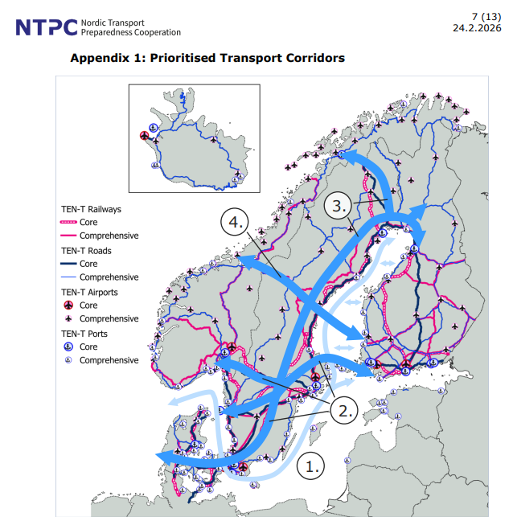

En geopolitisk analys av 2026 och dess betydelse för Europa, Norden och Sveriges säkerhet. Preliminär lägesbild till och med 5 oktober, med öppna källor och tydligt redovisade bedömningar.
Arbetsstomme · ej publiceradAnalysperiod: 1 januari–31 december 2026Planerad publicering: omkring 10 februari 2027
BLUF · Samlad bedömning · lägesbild 5 oktober 2026
Sveriges säkerhet beror på att hela kedjan fungerar
Analysfråga
Kommer civila flöden och kommersiella tjänster fortsatt att vara avgörande för Sveriges försvar och beredskap under 2027?
BLUFSannolik >80 %Ja. Militära åtaganden behöver fungerande transporter, kommunikation, underrättelser och försörjning. Sveriges handlingsutrymme avgörs därför också av aktörer och system utanför den egna försvarsorganisationen.
Rapportens underlag till och med den 5 oktober 2026 visar hur Sveriges militära åtaganden binds samman med civila verksamheter. Allierade förflyttningar behöver transportleder, industrin behöver energi och råvaror, och lägesbilden behöver fungerande kommunikation. Störningar i en del av kedjan kan därför begränsa förmågan i en annan.
De fyra analyskapitlen utvecklar denna bedömning från olika håll: ansvarsfördelningen mellan stater, Europas konflikter och transportleder, hot med svensk anknytning samt den förmåga Sverige bygger upp. Händelserna under 2026 utgör underlaget. Frågorna om 2027 visar vilka utvecklingar vi bedömer behöver följas.
Bedömningsgrunder och vad som kan ändra slutsatsen
Bärande skäl: Allierad planering, nordiska transport- och energianalyser samt redovisade teknik- och råvaruberoenden pekar i samma riktning. De följande kapitlen visar hur dessa samband ser ut.
Omprövning: Verifierade reservlösningar och övad uthållighet skulle minska sårbarheten. Ett kraftigt ändrat omvärldsläge kan förändra vilka beroenden som väger tyngst.
Den mest avgörande uppföljningen är vad som faktiskt fungerar: levererad försvarsförmåga, skydd och återställning efter avbrott, genomförda rättsprocesser samt prövade reservflöden. Ett beslut eller ett stort antal rapporterade fall räcker inte för att bedöma detta.
Läs bedömningen först och pröva den mot underlaget. Rapporten går från förändringar i världsordningen till Europas säkerhetsläge, hot med svensk anknytning och den förmåga Sverige bygger upp. Kartan och fallförteckningen finns samlade efter analyskapitlen.
Varje analysdel börjar med en fråga och ett kort svar med sannolikhetsgrad. Därefter följer källbelagda händelser och resonemang. Bedömningsgrunder och uppföljning kan öppnas efter respektive genomgång. Faktagenomgången har brytdatum 5 oktober 2026; årets återstående månader behöver tillföras före slutversionen.
01 · Geopolitisk ram · lägesbild 5 oktober 2026
Världsordning i förändring
Analysfråga
Kommer Europa att bära ett större ansvar för sin säkerhet inom Nato under 2027?
BLUFSannolik >80 %Europeiska allierade behöver finansiera och genomföra en större del av försvaret och stödet till Ukraina. Nato förblir den gemensamma ramen.
Utvecklingen hittills under 2026 pekar mot en omförhandling av ansvar och inflytande inom den internationella ordningen. USA:s försvarsstrategi prioriterar hemlandsförsvar och Kina, samtidigt som Nato bekräftar artikel 5 och ett större europeiskt ansvar. Kina och BRICS driver egna krav på institutioner och samarbete. Underlaget visar förändrade prioriteringar och åtaganden, men ingen färdig ersättning för dagens ordning.
För Sverige är följden att politiska löften behöver bedömas tillsammans med faktisk militär förmåga och uthållighet. Det är också bakgrunden till förhandlingarna om Ukrainas säkerhet: villkoren påverkar Europas framtida handlingsutrymme. Avsnitten nedan prövar först den transatlantiska relationen, därefter fredsvillkoren och konkurrensen om internationellt inflytande.
Bedömningsgrunder och vad som kan ändra slutsatsen
Bärande skäl: USA:s prioriteringar, Ankaradeklarationens åtaganden för 2026–2027 och IISS bedömning av europeiska förmågegap pekar i samma riktning.
Omprövning: Ett tydligt amerikanskt resurstillskott som ersätter europeiska åtaganden, eller en större förändring av alliansens roll, skulle försvaga slutsatsen.
Visa översikten över världsordningen
USA och den transatlantiska relationen
Analysfråga
Kan Europa ersätta den amerikanska försvarsförmågan i bred omfattning redan under 2027?
BLUFTveksam <20 %En snabb och bred ersättning framstår som osannolik. Ökade investeringar ger inte omedelbart färdiga förband, stödsystem och ledningsförmåga.
USA:s nationella försvarsstrategi för 2026 (U.S. Department of War, 2026) anger fyra huvudlinjer: försvar av hemlandet, avskräckning av Kina, större ansvar för allierade och partner samt en starkare försvarsindustri. I USA:s försvarsstrategi 2026 lyfts också dess geografi: dokumentet vill säkra amerikansk militär och kommersiell tillgång till strategisk terräng, särskilt Grönland och Panamakanalen. Strategin är ett styrdokument, men formuleringarna bevisar inte i sig att resurser redan har flyttats. För Europa är den tydliga förändringen att Washington lägger större vikt vid prioriteringar nära det egna territoriet och förväntar sig att allierade stärker sin egen förmåga.
Ankaradeklarationen (Nato, 2026) bekräftar artikel 5 och beskriver det transatlantiska bandet som bestående. Samtidigt uppger Nato att europeiska allierade och Kanada ökade investeringarna i centrala försvarskrav med mer än 139 miljarder dollar under 2025. De åtog sig att finansiera huvuddelen av stödet till Ukraina och utlovade 70 miljarder euro i militär materiel, stöd och utbildning för 2026, med minst motsvarande nivå 2027. Deklarationen redovisar åtaganden och investeringstal; den visar inte i sig att förmågebrister är åtgärdade eller att allt utlovat stöd har levererats.
En konkret europeisk motbild till föreställningen att upprustning automatiskt betyder operativ självständighet finns i den europeiska försvarsutvecklingen. IISS beskriver både en snabb ökning av europeiska försvarsutgifter och kvarstående förmågegap; IISS drar i sin slutsats (International Institute for Strategic Studies, 2026) att en starkare europeisk försvarspelare inom Nato fortfarande är ett pågående arbete. Det talar för att skilja mellan politiska löften, investeringar, levererad materiel och förmåga att faktiskt planera och genomföra operationer.
Bedömningsgrunder och vad som kan ändra slutsatsen
Bärande skäl: IISS redovisar kvarstående europeiska förmågegap samtidigt som Nato betonar den transatlantiska ramen. Ett år är en kort tid för att ändra beroenden i flera militära funktioner.
Omprövning: Stora verifierade leveranser och övningar som visar självständig europeisk förmåga i de berörda funktionerna skulle kräva en högre bedömning.
Förhandlingarna om Ukraina och Europas säkerhetsvillkor
Analysfråga
Kommer säkerhetsgarantier och territoriella villkor att fortsätta begränsa möjligheten till en hållbar fred under 2027?
BLUFTroligen 55–75 %De dokumenterade motsättningarna försvinner inte genom positiva besked efter ett möte. En hållbar uppgörelse behöver både accepterade villkor och förmåga att upprätthålla dem.
Den 5 september reste Donald Trumps sändebud Steve Witkoff och Jared Kushner till Moskva för samtal med Vladimir Putin. Mötet varade omkring tre timmar. Dagen därpå fortsatte de till Kyiv, där de träffade Volodymyr Zelenskyj och även deltog i samtal med företrädare för Frankrike, Storbritannien och Tyskland. Förhandlingsspåret omfattade därmed både direktkontakter mellan Washington och Moskva och konsultationer med Ukraina och europeiska partner (Rodkiewicz et al., 2026).
Diskussionen om ryska ”röda linjer” föregick septemberbesöket. I en intervju som Anadolu rapporterade om den 22 februari sade Witkoff att Putin varit tydlig med sina röda linjer och motiv, och försvarade kontakterna som nödvändiga för att förstå motpartens krav (Eruygur, 2026). Uttalandet beskriver den amerikanske förhandlarens syn på Putin. Det gör inte Moskvas krav till internationellt erkända gränser för Ukrainas eller Europas handlingsfrihet.
Efter mötena i september återstod motsättningarna om territorium och säkerhetsgarantier. Zelenskyj välkomnade att förhandlingarna återupptagits, men framhöll att territoriella frågor måste avgöras på ledarnivå och att Ukraina behöver en stark egen försvarsmakt. Hans kansli redovisade också en separat samtalsrunda med de europeiska rådgivarna (Ukrainas presidentkansli, 2026). Det brittiska parlamentsbibliotekets genomgång den 15 september konstaterade att de offentliga ryska uttalandena inte visade någon beredskap att kompromissa om tidigare krav. Det positiva språkbruket efter ett möte behöver därför skiljas från ändrade förhandlingspositioner (Mills, 2026).
Internationellt gensvar: förhandlingar, gränser och fortsatt tryck
De europeiska reaktionerna förenade stöd till diplomati med krav på hur en fred ska utformas. Vid FN:s säkerhetsråd den 23 september betonade Europeiska rådets ordförande António Costa Ukrainas suveränitet, territoriella integritet, rätt att välja sin framtid och behov av trovärdiga säkerhetsgarantier (Costa, 2026). Storbritanniens utrikesminister avvisade samma dag gränsändringar med våld och förespråkade vapenvila, fortsatt stöd till Ukraina och ökat ekonomiskt tryck på Ryssland (Foreign, Commonwealth & Development Office, 2026).
Den 22 september förlängde EU sanktionslistningarna mot personer och organisationer som undergräver Ukrainas territoriella integritet med tre år, till den 22 september 2029. Det var en konkret åtgärd för fortsatt tryck, parallellt med förhandlingskontakterna. Beslutet gällde dessa listningar och ska inte beskrivas som en förlängning av samtliga Rysslandssanktioner (Europeiska unionens råd, 2026).
Världens hållning kan inte sammanfattas som ett enhetligt gensvar. Redan den 24 februari antog FN:s generalförsamling resolutionen Support for lasting peace in Ukraine med 107 röster för, 12 emot och 51 nedlagda. Sverige röstade för; USA, Kina och Indien avstod. Omröstningen föregick septembermötet och visar ländernas ställningstaganden till just den resolutionen, inte deras reaktion på sändebudens resa eller stöd för ryska territoriella krav (FN:s generalförsamling, 2026).
Bedömningsgrunder och vad som kan ändra slutsatsen
Bärande skäl: Ukrainas presidentkansli, europeiska ställningstaganden och det brittiska parlamentsbibliotekets genomgång visar att centrala krav fortfarande skiljer sig åt.
Omprövning: En accepterad överenskommelse med konkreta garantier och dokumenterad efterlevnad skulle förändra slutsatsen. Bedömningen gäller hindren, inte att en viss förhandling måste misslyckas.
Kina och BRICS: inflytande och alternativa samarbeten
Analysfråga
Kommer Kina och BRICS att fortsätta utmana västländers inflytande genom befintliga institutioner och parallella samarbeten under 2027?
BLUFTroligen 55–75 %Reformkrav och praktiska samarbeten består. Underlaget talar starkare för konkurrens inom och vid sidan av dagens ordning än för en färdig ersättningsordning.
Opinionsmätningen visar en förändring i internationell uppfattning, inte en förskjutning av Sveriges säkerhetspolitiska orientering eller ett bevis på att Kina betraktas som en mer pålitlig partner i alla frågor. Den bör läsas tillsammans med andra mått på diplomatiskt inflytande, handel, teknikberoenden och konkreta statliga beslut. För rapportens fortsatta analys är den ändå relevant: upplevd legitimitet påverkar hur attraktivt ett lands ledarskap och dess internationella förslag framstår.
BRICS och reformkrav på den globala ordningen
BRICS betalningssamarbete tar sin utgångspunkt i New Delhi-deklarationen. Den förespråkar större inflytande för tillväxt- och utvecklingsekonomier i FN, IMF, Världsbanken och WTO, beskriver multipolaritet som ett mål och motsätter sig ensidiga sanktioner som inte beslutats av FN:s säkerhetsråd. Deklarationen ger BRICS arbetsgrupp för betalningar i uppdrag att fortsätta söka praktiska lösningar för gränsöverskridande betalningar; den nämner även diskussioner om avräkning och investeringar i medlemsländernas egna valutor.
Deklarationen går längre än handel och finans: den tar upp BRICS-satellitkonstellationen för fjärranalys och fortsatta cybersäkerhetsövningar inom finanssektorn. Det är en breddning av de samarbetsområden som gruppen själv pekar ut, men dokumentet räcker inte för att fastställa gemensam operativ förmåga eller faktisk effekt. Betalningsarbetet är fortfarande ett utvecklingsspår, inte ett beslut om gemensam valuta eller att ersätta dollarn. Uppgifterna om BRICS betalningssamarbete betonar samma skillnad mellan lokala valutor och en gemensam valuta. Vår bedömning är därför att BRICS bör följas som ett forum för samordnade reformkrav och praktiskt samarbete, samtidigt som medlemsländernas nationella intressen och relationer med väst skiljer sig åt.
Den politiska ordningens inre utveckling
Den internationella konkurrensen utspelar sig också mellan politiska modeller. V-Dem Democracy Report 2026 återger rapportens klassificering vid utgången av 2025: 92 autokratier och 87 demokratier, med 74 procent av världens befolkning i autokratier. V-Dems rapport och metod (Nord et al., 2026) visar att detta är en klassificering av styrelseskick, inte en karta över vilka stater som samarbetar eller står mot varandra. Den ger ändå en viktig bakgrund till att legitimitet, politiska rättigheter och innebörden av en regelbaserad ordning har blivit omstridda frågor.
Bedömningsgrunder och vad som kan ändra slutsatsen
Bärande skäl: BRICS-deklarationen pekar ut betalningar, teknik och internationell representation. Opinionsdata visar förändrade uppfattningar men kan inte ensamma förklara konkreta statliga vägval.
Omprövning: Dokumenterade avbrott i samarbetena skulle försvaga bedömningen. Genomförda gemensamma system skulle stärka påståenden om praktisk förmåga, som ännu inte kan utläsas ur deklarationen.
Referenser
BRICS. (2026, 12 september). BRICS New Delhi Declaration: Building for Resilience, Innovation, Cooperation and Sustainability. Prime Minister’s Office, Government of India. Originaldokument.
Costa, A. (2026, 23 september). Remarks by President António Costa at the United Nations Security Council meeting on maintenance of peace and security of Ukraine. Europeiska rådet. consilium.europa.eu.
Eruygur, B. (2026, 22 februari). US special envoy says possible peace talks in 'next 3 weeks' may lead to Putin, Zelenskyy summit. Anadolu Agency. aa.com.tr.
Europeiska unionens råd. (2026, 22 september). Ukraine's territorial integrity: EU extends individual listings for three years.consilium.europa.eu.
FN:s generalförsamling. (2026, 24 februari). Support for lasting peace in Ukraine. [Omröstningsdata för A/RES/ES-11/10]. United Nations Digital Library. digitallibrary.un.org/record/4103179.
Foreign, Commonwealth & Development Office. (2026, 23 september). Foreign Secretary address to the UNSC on Ukraine.gov.uk.
International Institute for Strategic Studies. (2026, 16 september). The Defence of Europe in a New Era: An Assessment — Conclusion: Defending Europe in a New Era.Originaldokument.
Mills, C. (2026, 15 september). Ukraine: A new push for peace. House of Commons Library. commonslibrary.parliament.uk.
Rodkiewicz, W., Menkiszak, M., Nieczypor, K., & Kohut, A. (2026, 7 september). Witkoff and Kushner in Moscow and Kyiv: White House resumes peace mediation. Ośrodek Studiów Wschodnich. osw.waw.pl.
Ukrainas presidentkansli. (2026, 7 september). Restarting the Negotiation Process Is Important, and Ukraine Is Grateful to the U.S. President and His Envoys for This Step – Volodymyr Zelenskyy Following a Meeting with the U.S. President’s Envoys in Kyiv.president.gov.ua.
02 · Krig, avskräckning och geografiska samband · lägesbild 5 oktober 2026
Krig och säkerhet i Europas närområde
Analysfråga
Kommer krig och angrepp under tröskeln för väpnad konflikt att fortsätta belasta Europas civila infrastruktur under 2027?
BLUFTroligen 55–75 %Energi, transporter och försvarsindustrins leverantörer förblir utsatta. Angrepp kan få omfattande följder även när utföraren har små resurser.
Kriget mot Ukraina fortsätter att forma Europas försvarsplanering. Samtidigt visar rapportens baltiska och tyska ärenden hur försvarsleverantörer, järnväg och internationella transportkedjor kan beröras av angrepp utanför krigszonen. Östersjön, Arktis och Hormuz knyter dessutom samman militära behov med energi och handel. De olika ärendena ger konkreta exempel på utsatthet, med skilda uppgifter om ansvar och motiv.
För Sverige går konsekvenserna genom stöd till Ukraina, allierade förstärkningar och fungerande försörjning. Genomgången börjar därför med de geografiska sambanden och går sedan till angreppens metoder och Europas svar. På så sätt kan de enskilda fallen läsas mot den miljö de påverkar.
Bedömningsgrunder och vad som kan ändra slutsatsen
Bärande skäl: Ukrainakriget, de baltiska utredningarna, tysk offentlig attribuering och separata angrepp mot el och järnväg visar flera vägar till samma slags störningar.
Omprövning: En uthållig minskning av konflikterna och dokumenterat minskad angreppsförmåga skulle sänka bedömningen. Urvalet visar inte hur ofta angrepp kommer att ske.
Visa sambanden mellan Europas säkerhetsområden
Ukraina: från militärt stöd till långsiktigt försvarssamarbete
Analysfråga
Kommer det svensk-ukrainska samarbetet att få en mer långsiktig industriell inriktning under 2027?
BLUFTroligen 55–75 %Avtal, utbildning och underhåll pekar mot ett samarbete som sträcker sig bortom enskilda stödleveranser. Tidplaner och omfattning återstår att pröva.
Rysslands fullskaliga invasion fortsätter att forma Europas försvarsplanering. Under 2026 har samarbetet mellan Sverige och Ukraina tagit konkreta steg från stöd under pågående krig mot mer långsiktiga industriella och militära relationer. Vid mötet i Uppsala den 28 maj undertecknade länderna en gemensam förklaring om förstärkt säkerhets- och försvarssamarbete. Ukraina tillkännagav samtidigt avsikten att köpa 20 Gripen E/F, vilket är ett avsiktssteg och inte i sig ett färdigställt leveransavtal. Den svenska regeringen beskrev också en planerad donation av äldre Gripenflygplan; den politiska inriktningen och den faktiska leveranstakten måste därför följas var för sig. Händelsen finns sammanfattad i besöket och försvarssamarbetet i Uppsala och i regeringens besked om Gripen (Regeringskansliet, 2026; Reuters, 2026).
Det strategiska värdet ligger inte enbart i ett enskilt vapensystem. Ett långsiktigt samarbete kan omfatta utbildning, underhåll, ammunition, sensorer och industrikapacitet. Det skapar möjligheter till gemensamt lärande från ett pågående högintensivt krig, men också krav på produktionskapacitet och uthålliga politiska beslut. För Sverige innebär detta en sammanflätning av nationell försvarsplanering, stöd till Ukrainas självförsvar och europeisk försvarsindustri. Det är en analytisk slutsats av samarbetsinriktningen; den ska inte läsas som belägg för att planerade förmågor redan finns operativt tillgängliga.
Bedömningsgrunder och vad som kan ändra slutsatsen
Bärande skäl: Den gemensamma förklaringen och Gripenavsikterna visar politisk inriktning. Ankaradeklarationen anger fortsatt stöd 2027. Produktionskapacitet och finansiering begränsar hur snabbt detta kan genomföras.
Omprövning: Bindande leveransavtal och finansierat underhåll skulle stärka bedömningen. Uppskjutna eller indragna åtaganden skulle försvaga den.
Östersjön: skydd av infrastruktur och fungerande förbindelser
Analysfråga
Kommer skydd och reservvägar för energi och transporter i Östersjöområdet att förbli en gemensam nordisk-baltisk prioritering under 2027?
BLUFSannolik >80 %Ländernas sammanlänkade system kräver samordning även när orsaken till en enskild störning är okänd.
Östersjön är både ett militärt operationsområde och en tät korridor för handel, energi och data. NATO:s Baltic Sentry, som inleddes 2025 efter skador på kritisk undervattensinfrastruktur, innebär ökad allierad närvaro och användning av bland annat fartyg, patrullflyg och marina drönare. Initiativet stärker övervakning och beredskap; dess existens visar inte i sig vem som ligger bakom en enskild kabelskada. Att hålla isär observerad skada, utredning och attribuering är centralt i en miljö där incidenter snabbt får politiska följder (NATO, 2025).
Den ekonomiska och civila dimensionen blir tydlig i den nordiska strategin för transportsystemets beredskap. Den behandlar scenarier där sjötrafik genom Östersjön och de danska sunden begränsas eller störs, och behovet av nordisk samordning kring hamnar, landförbindelser och isbrytning. Strategin för nordisk transportberedskap pekar på den praktiska följden för Sverige: hamnar och landkorridorer kan behöva bära större transitflöden om vissa sjövägar blir svårare att använda. Det är ett planeringsscenario, inte en prognos om att en blockad är nära förestående (Nordic Transport Preparedness Cooperation, 2026).
Visa prioriterade nordiska transportkorridorer

Strategins bilaga 1, ”Prioritised Transport Corridors” (Nordic Transport Preparedness Cooperation, 2026, s. 7). Korridorerna visar planerad nordisk transportberedskap; kartan är inte en prognos över faktiska transporter i en kris.
En separat energianalys från Nordic Energy Research beskriver hur sammankopplingen mellan nordiska och baltiska el- och energisystem både ger motståndskraft och skapar ömsesidiga beroenden. Rapporten pekar särskilt på den täta koncentrationen av gränsöverskridande undervattensinfrastruktur i Östersjön och på att störningar kan få följder över nationsgränser. Den officiella rapporten Energy Security in the Nordics visar varför infrastrukturens skydd måste analyseras regionalt, samtidigt som varje incident bedöms utifrån sina egna belägg (Rauhala & Fager-Pintilä, 2026).
Bedömningsgrunder och vad som kan ändra slutsatsen
Bärande skäl: Baltic Sentry, den nordiska transportstrategin och den nordisk-baltiska energianalysen beskriver överlappande behov av övervakning, transportberedskap och återställning.
Omprövning: Avvecklade skyddsåtaganden eller fungerande alternativ som väsentligt ändrar beroendena skulle behöva vägas in. Prioritering är inte detsamma som fullt genomförd beredskap.
Arktis: allierad närvaro under svåra förhållanden
Analysfråga
Kommer Arktis och Nordkalotten att få fortsatt betydelse för allierad närvaro och förstärkning under 2027?
BLUFTroligen 55–75 %Norra Sverige ingår i en större nordlig planering där tillgång till områden måste följas av fungerande logistik och kommunikation.
Arktis ger ett särskilt tydligt exempel på hur amerikansk omprioritering och europeiskt alliansarbete möts. Ett försvarsavtal mellan USA, Danmark och Grönland undertecknades den 22 september. försvarsavtalet om Grönland pekar på de två planerade försvarsområdena i Narsarsuaq och Mestersvig; i Statsministeriets redogörelse (Statsministeriet, 2026) framhålls samtidigt suveränitet, grönländskt självbestämmande och att avtalet är förankrat i Nato. Tillsammans med USA:s uttalade intresse av tillgång till strategisk terräng i Arktis visar detta att omprioriteringen inte enkelt kan beskrivas som ett amerikanskt tillbakadragande från Europa. Den innebär också att den arktiska dimensionen får större betydelse i förhandlingar om alliansens ansvar, närvaro och kontroll.
Arktis säkerhet handlar om mer än territoriell kontroll. Avstånd, väder, mörker, begränsad infrastruktur och beroende av rymdbaserad övervakning påverkar möjligheten att upptäcka, förstärka och försörja förband. I februari lanserade NATO Arctic Sentry som en allierad militär aktivitet i norr. I september genomfördes den danskledda övningen Arctic Shield på Grönland: det danska försvaret uppgav att över 400 militärer från omkring tio NATO-länder tränade i arktiska förhållanden. Även svenska hemvärnssoldater deltog; det svenska deltagandet i övningen visar hur nordiskt samarbete omsätts i praktisk träning. Övningen är ett exempel på samverkan och operativ erfarenhet, inte ensam ett mått på varaktig förstärkningsförmåga (Danish Defence, 2026; NATO, 2026).
För Sverige är kopplingen till Arktis konkret: norra Sverige ingår i ett större nordiskt område för militär rörlighet, energiförsörjning och kritiska råvaror. Möjligheten att ta emot, förflytta och försörja allierade styrkor beror på fungerande vägar, järnvägar, hamnar, flygbaser och kommunikationer. Övningar prövar delar av detta under begränsade förhållanden, medan den nordiska transportberedskapsplaneringen beskriver de strukturella flaskhalsarna. Därför bör utvecklingen bedömas genom både militär närvaro och den civila infrastruktur som gör närvaron uthållig.
Bedömningsgrunder och vad som kan ändra slutsatsen
Bärande skäl: Grönlandsavtalet, Arctic Sentry, Arctic Shield och svensk-finsk förstärkningsplanering visar politiskt och operativt intresse. Övningarna mäter bara delar av uthålligheten.
Omprövning: Indragen närvaro eller ändrade avtal skulle försvaga slutsatsen. Verifierad förmåga att förstärka och försörja över tid skulle stärka den.
Hormuz: när regional konflikt blir transport- och energirisk
Analysfråga
Kommer störningar i och kring Hormuz att kunna påverka Europas försörjning även under 2027?
BLUFTroligen 55–75 %Risk kan överföras genom sjöfart, försäkringar och energiflöden. Oljeledningar som går runt sundet ger alternativ men har egna begränsningar.
Hormuzsundet är fortfarande den huvudsakliga sjövägen ut ur Persiska viken. Det finns två etablerade oljeledningar som kan föra en del av exporten till hamnar utanför sundet: Saudiarabiens East–West Pipeline till Yanbu vid Röda havet och Förenade arabemiratens ADCOP-ledning från Abu Dhabi till Fujairah vid Omanbukten. De ger alternativa exportvägar, men deras kapacitet är begränsad jämfört med normala sjöflöden och de flyttar sårbarheten till ledningar, pumpstationer och terminaler. U.S. Energy Information Administration beskriver bypass-kapaciteten som begränsad; ADNOC anger att ADCOP är omkring 406 kilometer och mynnar vid Fujairah (EIA, 2019; ADNOC, u.å.).
Sjöväg genom HormuzSaudiarabiens East–West PipelineUAE:s ADCOP-ledningRapporterade skadeområden, ungefärliga
Den alternativa vägen blev själv ett mål den 11 september. Reuters rapporterade att drönare skadade tre pumpstationer längs Saudiarabiens cirka 1 200 kilometer långa East–West Pipeline, varefter ledningen stängdes tillfälligt av säkerhetsskäl. Saudiarabien pekade ut en attack med ursprung i Irak; ansvaret för angreppet har inte offentligt fastställts av någon grupp. Ledningen återstartades den 22 september, enligt Reuters, men attacken visade att omledning via Yanbu inte undanröjer risken för avbrott. Angreppet mot pumpstationerna och konsekvenserna för oljeleden och satellitbilderna och skadebedömningen ger belägg för skador, men inte i sig för vem som beordrade attacken (Reuters, 2026c, 2026d, 2026e).
Den 4 oktober rapporterade Reuters att Irans parlamentstalman sade att sundet inte skulle öppnas förrän villkor i en tidigare överenskommelse uppfyllts. Dagen därpå beskrev Reuters både en återhämtning av Mellanösterns oljeexport under september och minst sju incidenter mot tankfartyg i början av oktober. Flödena hade delvis återhämtat sig, men fartygsrisker och komplicerade omlastningar kvarstod. Exportvolym, faktisk passage och kommersiell risk är skilda mått; läget kan därför inte beskrivas som vare sig helt normalt eller totalt stängt (Reuters, 2026a, 2026b).
För Europa och Sverige kan störningar nå ekonomin genom högre frakt- och försäkringskostnader, längre omläggningar och volatilitet i energi- och insatsvarupriser. Det är en spridningsmekanism, inte ett påstående om en viss svensk brist eller prisökning. Den nordiska energirapporten använder 2026 års Hormuzkris som exempel på hur integrerade marknader och konkurrens om transporter kan föra konsekvenserna vidare. Tillsammans visar sundet, alternativa ledningar och attacken mot East–West Pipeline att fysisk redundans inte ensam garanterar uthållighet: också knutpunkter, skydd och reparationsförmåga spelar roll.
Bedömningsgrunder och vad som kan ändra slutsatsen
Bärande skäl: Sundets betydelse, begränsad bypass-kapacitet och angreppet mot East–West Pipeline visar beroenden. Återhämtade exportvolymer innebär inte att hela transportkedjan saknar risk.
Omprövning: Uthålligt säkra transporter och dokumenterat fungerande reservkapacitet skulle sänka bedömningen. Detta är ingen prognos om en viss svensk brist eller prisökning.
Baltikum: sabotage, ombud och offentlig attribuering
Analysfråga
Kommer rekryterade utförare fortsatt att vara en användbar metod för angrepp mot stöd till Ukraina under 2027?
BLUFTroligen 55–75 %Uppdelade uppdrag kan skapa avstånd till en beställare och rikta skada mot leverantörer eller transporter. Metoden kan användas i flera länder.
Estland, Lettland och Litauen har under 2026 offentliggjort uppgifter om angrepp och utredningar som berör försvarsindustri, järnväg och internationella transportkedjor. Fallen visar hur stöd till Ukraina och samhällsviktiga funktioner kan bli mål även utanför krigszonen. De har olika rättslig status och olika tydlig koppling till Ryssland. Äldre angrepp tas här med när åtal eller nya myndighetsbedömningar offentliggjorts under 2026; de räknas inte som nya angrepp i år.
Estland – Milrem Robotics: Den 29 september meddelade regeringen att den med full säkerhet bedömde att ryska specialtjänster hade beställt branden i en byggnad som användes av Milrem Robotics i Tallinn den 15 augusti. Slutsatsen byggde på Kapo:s underrättelseunderlag. Tre lettiska medborgare hade gripits i Lettland och överlämnats till Estland den 17–18 september. Regeringen beskrev angreppet som ett försök att skrämma landet och minska stödet till Ukraina, men meddelade att stödet och trycket på Ryssland skulle fortsätta. Det är en uttrycklig statlig attribuering; brottsutredningen pågick fortfarande när beskedet lämnades (Estlands regering, 2026).
Lettland – järnvägsbränder och påverkansmaterial: Den 12 mars redovisade säkerhetstjänsten VDD ett ärende där två personer misstänktes ha anlagt bränder i reläskåp och ett lok i augusti 2025. VDD hade den 2 mars begärt att åklagare skulle inleda lagföring och knöt gärningarna till ryska intressen. Enligt myndigheten filmade utförarna bränderna och skickade materialet till uppdragsgivare, som framställde bilderna som ryska framgångar i Ukraina. Det fysiska angreppet användes alltså även som material för psykologisk påverkan, enligt VDD:s utredning (VDD, 2026b).
Lettland – ett separat järnvägsärende: Den 26 maj beskrev VDD fyra misstänkta och fyra bränder i Riga: tre i oktober 2025 och en i januari 2026. Målen omfattade utrustning för järnvägsbelysning och tågstyrning. En redan fängslad person misstänktes ha fungerat som mellanhand för rekrytering och ersättning. Bränderna hade filmats och dokumentationen skickats via Telegram. VDD hade begärt lagföring den 21 maj. I detta pressmeddelande angavs endast ”främmande stat”; Ryssland namngavs inte. Ärendet ska därför hållas åtskilt från marsärendet både i fallräkning och attribuering (VDD, 2026a).
Litauen – TVC Solutions: Den 16 januari offentliggjorde åklagarmyndigheten att sex personer åtalats efter två misslyckade brandförsök i Šiauliai den 17 och 22 september 2024. Målet var TVC Solutions och utrustning för analys av radiospektrum avsedd för Ukrainas försvar. Åklagarmyndigheten uppgav att misstänkta samordnare i Ryssland hade kopplingar till den ryska militära underrättelsetjänsten GRU och att utredningen gav grund för misstanken att sabotaget beställts av och skulle gynna GRU. Det är en redovisad misstanke i ett åtalat terrorärende, inte en fällande dom om styrkedjan (Lietuvos Respublikos prokuratūra, 2026).
Litauen – brandanordningar i paket: Den 6 mars offentliggjorde VSD att ett separat mål med fem åtalade hade överlämnats till domstol den 27 februari. Det gällde paket som skickats från Vilnius i juli 2024 och orsakat bränder i internationella transportkedjor (VSD, 2026). Eurojust redovisade totalt 22 identifierade misstänkta i den gemensamma utredningen i Litauen och Polen, med misstänkt koppling till Rysslands militära underrättelsetjänst. Myndigheten beskrev digital rekrytering, uppdelade uppgifter och ersättning som ofta betalades i kryptovaluta. De fem åtalade i Litauen är en del av detta större ärende; uppgifterna avser inte 22 domar eller 22 nya angrepp (Eurojust, 2026).
Mål med fem åtalade till domstol 27 februari; offentliggjort 6 mars
Misstänkt koppling till rysk militär underrättelsetjänst.
Bedömningsgrunder och vad som kan ändra slutsatsen
Bärande skäl: Estlands attribuering, lettiska utredningsuppgifter och den litauiska paketutredningen beskriver mellanhänder, betalningar och deluppgifter. De visar inte att alla fall ingår i samma nätverk.
Omprövning: Belägg för utslagna rekryteringskedjor skulle försvaga bedömningen. Nya oberoende bevis för fortsatt rekrytering skulle stärka den; enskilda misstankar kan ändå falla i domstol.
Tyskland: ryska ombud, offentlig attribuering och europeiskt gensvar
Analysfråga
Kommer europeiska svar på ryskt sabotage att omfatta gemensamma politiska och skyddande åtgärder under 2027?
BLUFTroligen 55–75 %Tysk attribuering har följts av diplomatiska åtgärder och samråd. Det finns en tydlig inriktning mot samordning, men alla föreslagna mekanismer är ännu inte införda.
Tysklands erfarenheter visar hur ett angrepp mot en transportkedja kan få säkerhetspolitiska följder långt utanför platsen där det upptäcks. Den 1 september pekade regeringen ut Ryssland som ansvarigt för försöket till drönarattentat vid Leipzig/Halle den 4 augusti. Bedömningen grundades enligt regeringen på polisutredning, underrättelseuppgifter och angreppets kännetecken, däribland användningen av rekryterade utförare. Den straffrättsliga utredningen fortsatte. Tyskland aviserade stängning av det ryska generalkonsulatet i Bonn, uppsägning av avtalet för Ryska huset i Berlin, skärpta inresekontroller och förslag till ytterligare EU-sanktioner. EU:s utrikesministrar uttryckte stöd den 2 september och Natos ambassadörsråd sammanträdde (Bundesregierung, 2026).
Reaktionen nådde också Sverige. Regeringen höll den 1 september en pressträff med anledning av Tysklands besked (Regeringskansliet, 2026). Europaparlamentet antog den 16 september en resolution om hybridhot och skydd av europeisk försvarsinfrastruktur. Parlamentet efterlyste en gemensam civil och militär hantering av operationer under tröskeln för väpnad konflikt samt starkare skydd för energi, transporter och kommunikation (Europaparlamentet, 2026). Resolutionen är ett politiskt ställningstagande. Underlaget visar en rörelse mot gemensamma motåtgärder; det räcker inte för att fastställa att just Leipzigfallet ensamt orsakade den europeiska utvecklingen.
Tyska myndigheter beskriver en rekryteringsmodell där ryska underrättelsetjänster använder mellanhänder och sociala medier för att anlita tillfälliga utförare. Dessa ”engångsagenter” kan sakna utbildning, få begränsad ersättning och inte känna till uppdragsgivarens verkliga identitet. Regeringens redovisning av fler indikationer är inte ett mått på antalet bevisade sabotage (Deutscher Bundestag, 2026, 8 juni). Modellen försvårar upptäckt och kan hålla avstånd mellan beställare och gärning, men måste beläggas i varje ärende.
Stuttgart – dom och två frikännanden: Den 18 augusti dömdes en 30-åring till ett år och tre månaders fängelse för agentverksamhet i sabotagesyfte. Två medåtalade frikändes. Ärendet gällde paket med GPS-sändare som skickats från Tyskland till Ukraina i mars 2025. Domstolen fann att en rysk statlig aktör hade beställt transporterna för att undersöka möjliga sabotageobjekt. Däremot bevisades ingen tillräckligt konkret plan att därefter skicka brandanordningar eller att de två frikända förstått den ryska kopplingen. Domen hade inte vunnit laga kraft när domstolen publicerade sitt besked (Oberlandesgericht Stuttgart, 2026).
München – misstänkt angrepp nära försvarsindustri: Efter brandattentatet mot en byggarbetsplats den 3 september häktades två personer. Området ligger nära Rohde & Schwarz och Helsing, men den 4 september var det fortfarande oklart om företagen varit målet (Tagesschau, 2026). ARD rapporterade separat om starka indikationer på rekryterade ombud och en möjlig rysk underrättelsekoppling (Götschenberg, 2026). Medieuppgifterna har en annan bevisstatus än Tysklands offentliga attribuering av Leipzigangreppet.
Hamburg – nedlagda utredningar: I augusti lades utredningarna mot två varvsarbetare ned. De hade gripits i februari efter misstänkta manipulationer av marinens korvetter under 2025. Åklagarsidan bedömde att manipulationer hade skett, men kunde inte styrka vem av de två som utfört dem eller en gemensam brottsplan med den säkerhet som krävs för åtal. Ärendet är därför inget belägg för att dessa personer genomfört ryskt sabotage (dpa, 2026).
Från nationell incident till europeisk beredskap: Sveriges nationella säkerhetsråd höll ett extra möte den 2 september med anledning av Leipzig. Försvarsmakten beskrev händelsen som ett exempel på rysk hybridkrigföring (Försvarsmakten, 2026, 2 september; uppdaterad 8 september). Tysklands gemensamma centrum GAZ Hybrid, som öppnade redan den 16 juni, samordnar arbetet mot bland annat sabotage, spioneri och desinformation; det föregick Leipzigangreppet (Bundesregierung, 2026). Den 16 september föreslog kommissionsordföranden en gemensam EU-plan för svar på hybrida angrepp under tröskeln för väpnat angrepp, som komplement till Natos artikel 4. Det var ett förslag, inte en redan införd automatisk svarsmekanism (Europeiska kommissionen, 2026, 16 september).
Bedömningsgrunder och vad som kan ändra slutsatsen
Bärande skäl: Leipzigbeskedet, europeisk solidaritet, GAZ Hybrid och EU:s ställningstaganden pekar mot fler gemensamma arbetssätt. Stuttgart och Hamburg visar samtidigt varför rättsprocesserna måste redovisas separat.
Omprövning: Genomförda EU-beslut och gemensamma skyddsrutiner skulle stärka slutsatsen. Utebliven samordning eller försvagat underlag för attribuering skulle kräva omprövning.
Vänsterextrema och miljöpolitiska motiv i infrastruktursabotage
Analysfråga
Kommer ideologiskt motiverade angrepp mot el och transporter fortsatt att utgöra ett separat säkerhetsproblem under 2027?
BLUFTroligen 55–75 %Angrepp med uppgivna aktivistmotiv kan ge stora avbrott utan att någon statlig beställare har belagts. De behöver följas utifrån egna aktörer och motiv.
Angrepp mot samma slags infrastruktur kan ha olika drivkrafter. Sabotage med uppgiven aktivistkoppling behöver därför följas i ett eget spår. Den geopolitiska betydelsen ligger i följderna för industriproduktion, samhällsservice och transporter, även när någon statlig styrning inte har belagts.
Berlin, 3 januari: Branden vid en kabelbro i Lichterfelde slog ut el till omkring 45 000 hushåll och 2 200 verksamheter. Ett meddelande i Vulkangruppens namn tog på sig angreppet och angav motstånd mot fossil energi som motiv (Tagesschau, 5 januari 2026). Förbundsåklagaren inledde en utredning mot okända gärningspersoner, bland annat om terroristorganisation, mordbrand och författningsfientligt sabotage (Deutscher Bundestag, 2026). Ett ansvarspåstående och en brottsmisstanke ersätter inte ett domstolsavgörande om gärningspersonerna.
Erkrath och Leverkusen: Gruppen som kallar sig Kommando Angry Birds tog på sig ett misslyckat angrepp mot en elstation i Erkrath i januari och järnvägsbränderna norr om Leverkusen den 10 juli. ZDF beskriver gruppens uttalade motstånd mot industrisamhället och ekologiska argument som en del av en anarkoprimitivistisk idévärld (Klaus & Metzger, 2026). I juli skadades signalkablar och trafiken mellan Köln och Düsseldorf stördes. Delstatens inrikesminister bedömde ansvarspåståendet som sannolikt riktigt för åtminstone ett av angreppen, medan polisen utredde dess äkthet (WDR, 2026a).
Elangreppen i september: Förbundsåklagaren tog den 10 september över utredningar om sabotage i Brandenburg, Nordrhein-Westfalen och Sachsen. En misstänkt hade gripits den 8 september. Myndigheten knöt bland annat kortslutningarna i Turnow-Preilack och Bergheim-Rheidt den 1 september till ärendet (Der Generalbundesanwalt, 2026b). Ytterligare fynd redovisades i Dormagen, vid Bärwalde och Graustein samt Weisweiler. I ett ansvarspåstående angavs motstånd mot fossil elproduktion; inrikesministrarna beskrev i början av september ett misstänkt klimatmotiv. Det är motivuppgifter under utredning, inte en fällande dom eller belägg för en koppling till Vulkangruppen (WDR, 2026b).
Backnang, 23 augusti: Kapade kablar störde järnvägen och även internet- och telefonförbindelser. Polisens redogörelse fastställer skador och en pågående utredning, men namnger ingen aktör och anger inget klimatmotiv (Polizeipräsidium Aalen, 2026). Fallet visar varför en kabelskada behöver följas upp innan den förs in i en viss extremistisk eller statsstyrd kampanj.
Marin i Frankrike, 7 september: En högspänningsmast i Haute-Savoie hade fått tre av fyra mastben kapade. RTE och berörda företag bekräftade avbrott som stoppade Evianfabriken och Papeteries du Léman (Le Parisien & AFP, 2026). Ett anonymt meddelande på Indymedia tog på sig sabotaget och uttryckte bland annat solidaritet med motståndet mot motorvägen A412. Meddelandets äkthet var inte verifierad (Bouvet-Gerbettaz, 2026). Ansvarstexten knöt även industrikritiken till Gaza och vapenproduktion. Det visar avsändarens motivering, inte att dess påståenden om företagens verksamhet eller gärningsmannens identitet har verifierats (Loison, F., 2026, 11 september).
Bons-en-Chablais – en separat brand: Samma natt brann ett upplag med material för motorvägsbygget A412 i Bons-en-Chablais. Den geografiska och tidsmässiga närheten motiverar att möjliga samband undersöks, men den citerade rapporteringen fastställer inte samma gärningspersoner eller motiv. Branden har därför en egen post i kartan (Bouvet-Gerbettaz, 2026).
Protestaktioner: Polisens insats vid Scholven i Gelsenkirchen den 29 maj resulterade i 258 brottsutredningar, bland annat om intrång och skadegörelse, efter en klimataktion. Antalet är inte 258 fällande domar (Polizei Gelsenkirchen, 2026, 30 maj). I Malmö oljehamn blockerade klimataktivister trafik den 29 juli (Omni, 2026, 29 juli). Dessa exempel redovisas som protestaktioner med respektive polisuppgift, inte som fastställda terroristangrepp.
Bedömningsgrunder och vad som kan ändra slutsatsen
Bärande skäl: Berlin, järnvägsbränderna och den tyska elutredningen visar skilda förlopp. Ansvarstexter i Frankrike blandar miljö- och Palestinaretorik, men deras äkthet och gärningsmannaskap är inte slutligt fastställda.
Omprövning: Utredningar som ändrar bilden av aktörer och motiv kan ändra slutsatsen. Protest, sabotage och terrorbrott bedöms efter gärningarna; lagligt engagemang är inget belägg för våldsavsikt.
Referenser
Deutscher Bundestag. (2026, 8 juni). Einsatz sogenannter Wegwerf-Agenten in Deutschland.Originalkälla.
Europeiska kommissionen. (2026, 16 september). 2026 State of the Union Address by President von der Leyen.Originalkälla.
Bundesregierung. (2026). Hybride Bedrohungen: Fragen und Antworten.Originalkälla.
Loison, F.. (2026, 11 september). Un sabotage met les Papeteries du Léman à l’arrêt.Originalkälla.
Polizei Gelsenkirchen. (2026, 30 maj). Einsatz mit Klimaaktivisten beendet.Originalkälla.
Omni. (2026, 29 juli). Klimataktion i Malmö – aktivister blockerar väg.Originalkälla.
ADNOC. (u.å.). Who we are: Abu Dhabi Crude Oil Pipeline.adnoc.ae.
Danish Defence. (2026, 10 september). The Arctic Shield exercise is underway.forsvaret.dk.
Estlands regering. (2026, 29 september). Russia Responsible for Arson Attack on Milrem.valitsus.ee.
Eurojust. (2026, 6 mars). Joint investigation team disrupts group using self-igniting parcels for terrorist attacks.eurojust.europa.eu.
Lietuvos Respublikos prokuratūra. (2026, 16 januari). Baudžiamoji byla dėl teroro išpuolių Šiauliuose perduota teismui (with text in English).prokuraturos.lt.
U.S. Energy Information Administration. (2019, 20 juni). The Strait of Hormuz is the world’s most important oil transit chokepoint.eia.gov.
Valsts drošības dienests [VDD]. (2026a, 26 maj). VDD seeks criminal prosecution against a group of persons for arson in the interests of a foreign state.vdd.gov.lv.
Valsts drošības dienests [VDD]. (2026b, 12 mars). VDD seeks criminal prosecution against two individuals for arson in the interests of Russia.vdd.gov.lv.
Valstybės saugumo departamentas [VSD]. (2026, 6 mars). Teismui perduota byla dėl skirtingose valstybėse organizuotų ir planuotų įvykdyti teroro aktų (with text in English).vsd.lt.
Der Generalbundesanwalt beim Bundesgerichtshof. (2026b, 10 september). Übernahme der Ermittlungen nach den Angriffen auf Umspannwerke in Brandenburg, Nordrhein-Westfalen und Sachsen.https://www.presseportal.de/blaulicht/pm/14981/6349857.
Statsministeriet. (2026, 22 september). Pressemøde den 22. september 2026.Originalkälla.
03 · Hot, aktörer och metoder · lägesbild 5 oktober 2026
Hot och påverkan mot Sverige
Analysfråga
Kommer statliga ombud och digital rekrytering att fortsatt bidra till hot mot Sverige under 2027?
BLUFTroligen 55–75 %Främmande stater och våldsmiljöer kan använda lokala mellanhänder och nätkontakter för att nå svenska mål. De olika verksamheterna behöver följas var för sig.
De svenska ärendena visar hur internationella intressen får lokala uttryck. Säpo beskriver statliga ombud och rekrytering av utförare. Domar och utredningar om extremistiska miljöer, våld på nätet och kriminella mellanhänder visar andra vägar från kontakt till handling. Fallen har skilda drivkrafter och rättslig status, men flera berör samma praktiska frågor: rekrytering, anskaffning, målval och planering.
För att förstå hotet behöver man följa vad en aktör vill göra, vilken förmåga som finns och hur ett uppdrag kan genomföras i Sverige. Kapitlet börjar med statliga intressen och ombud, fortsätter med informationspåverkan och våldsmiljöer och avslutas med kameror och drönare. De svenska fallen hålls därmed samlade i samma analysdel.
Bedömningsgrunder och vad som kan ändra slutsatsen
Bärande skäl: Säpos uppgifter om iranska ombud och rysk rekrytering samt svenska domar och utredningar om extremistiska nätverk stöder slutsatsen. Styrningen i flera enskilda fall är fortfarande oklar.
Omprövning: Nya utredningsbesked, friande domar och belägg för minskad rekrytering kan ändra delbedömningarna. Vi bedömer en metod, inte skuld eller ansvar i ett namngivet ärende.
Hotbilden: statliga intressen möter svenska samhällsfunktioner
Analysfråga
Kommer svenska företag, teknik och kunskap fortsatt att vara mål för statliga säkerhetshot under 2027?
BLUFTroligen 55–75 %Hot mot Sverige kan riktas mot leverantörer och kunskap långt från militära anläggningar. De olika staternas intressen ger olika mål och metoder.
Säkerhetspolisens lägesbild 2025–2026 pekar ut Ryssland, Kina och Iran som de största statliga säkerhetshoten mot Sverige. Hoten tar sig olika uttryck. Rysslands verksamhet omfattar bland annat underrättelseinhämtning, påverkan och sabotagehot; kinesiska aktiviteter riktas också mot teknik och strategiska tillgångar; iranska säkerhetstjänster har ägnat sig åt hot, påtryckningar och kartläggning av oppositionella i Sverige (Säkerhetspolisen, 2026a). De här bedömningarna beskriver skilda aktörsintressen och metoder, inte en gemensam kampanj eller ett identiskt hot.
Den geopolitiska konkurrensen får en svensk dimension när intressen omsätts via företag, forskning, teknikhandel, digitala tjänster eller infrastruktur. Säpo har beskrivit misstänkta upplägg där teknik anskaffats i Sverige och förts vidare till Ryssland genom företag i tredje land. Det visar hur exportkontroll och säkerhetsprövning kan bli delar av en bredare strategisk konkurrens, samtidigt som enskilda misstankar måste hållas åtskilda från fastställd skuld (Säkerhetspolisen, 2026b). Analytiskt innebär detta att skyddet av svenska intressen inte enbart handlar om militära mål: även kunskap, leverantörskedjor och beslutsfattande kan vara exponerade.
Bedömningsgrunder och vad som kan ändra slutsatsen
Bärande skäl: Säpos lägesbild beskriver ryska, kinesiska och iranska intressen. Teknikanskaffning genom företag och tredje land ger exempel på hur kommersiella miljöer kan utnyttjas.
Omprövning: Nya myndighetsbedömningar och rättsliga utfall kan ändra vilka aktörer och metoder som väger tyngst. Ett affärssamband är inte i sig bevis för brott.
Spioneri och rekryterade ombud: låg tröskel, stor strategisk effekt
Analysfråga
Kommer rekrytering via mellanhänder fortsatt att göra statlig styrning svår att belägga i svenska ärenden under 2027?
BLUFTroligen 55–75 %En lokal utförare kan känna till sin uppgift men sakna insyn i beställarens mål. Det försvårar slutsatser om både avsikt och hela styrkedjan.
Den säkerhetspolitiska konkurrensen visar sig också i misstänkta underrättelseoperationer och sabotageförsök där staten håller avstånd till utföraren. Säkerhetspolisen beskriver ryska ”förbrukningsagenter” som personer som rekryteras, ofta digitalt, för enstaka uppdrag; upplägget gör det svårare att knyta handlingen direkt till en underrättelsetjänst. Exempel på hur rekryteringsmodellen beskrivits i Europa. I sin lägesbild 2025–2026 bedömer Säpo att metoden använts vid sabotage i Europa, men säger samtidigt att Sverige då inte var det primära målet för den typen av rysk aktivitet (Säkerhetspolisen, 2026a). Europeiska fall visar en metod och ett möjligt framtida angreppssätt, inte att ett visst svenskt sabotage har genomförts på ryskt uppdrag.
Två personer häktades i juli 2026 misstänkta för grov olovlig underrättelseverksamhet mot Sverige. Säpo har offentliggjort gripandet och brottsperioden, men inte identiteter eller vilken främmande makt som eventuellt berörs. Fallet är en pågående utredning, inte belägg för vem som ligger bakom eller vad de misstänkta ska ha gjort (Säpo, 3 juli 2026; lägesnotering). Ett annat svenskt ärende visar vikten av att redovisa rättsläget: en man som åtalats för grov olovlig underrättelseverksamhet friades i både tingsrätt och hovrätt. Hovrätten fann att han fungerat som mellanhand i rysk teknikanskaffning, men att åklagaren inte visat att gärningen utgjorde det åtalade brottet (Säpo om hovrättens dom). Teknikanskaffning, underrättelseverksamhet och sabotage kan ingå i samma strategiska miljö, men är rättsligt skilda saker.
Bedömningsgrunder och vad som kan ändra slutsatsen
Bärande skäl: Säpos beskrivning av förbrukningsagenter och europeiska utredningar visar hur uppgifter kan delas upp. Svenska häktningar och den friande teknikdomen visar begränsningarna i det offentliga bevisläget.
Omprövning: Direkt kommunikation, betalningsspår eller andra rättsligt prövade samband skulle kunna göra styrningen tydligare. Förekomst av metoden belägger inte ett specifikt svenskt sabotage.
Terrorhot, Iran och kriminella nätverk
Analysfråga
Kommer kriminella mellanhänder fortsatt att kunna användas för iranska intressen i Sverige under 2027?
BLUFTroligen 55–75 %Säpos uppgifter ger stöd för att följa kopplingen mellan statliga intressen och lokal rekrytering. Beställaren måste ändå beläggas i varje enskilt fall.
Den tydligaste svenska kopplingen mellan geopolitik och organiserad brottslighet gäller Iran. Säpo konstaterade i maj 2024 att den iranska regimen använder svenska kriminella nätverk som ombud för våldshandlingar mot personer och intressen som regimen betraktar som hot. Myndigheten nämnde bland annat iranska oppositionella samt israeliska och judiska mål, och uppgav att flera attentatsplaner med koppling till iranska säkerhetstjänster hade avvärjts. I juni 2026 sade Säpo att man det senaste halvåret hanterat flera sådana ärenden och att unga svenskar och kriminella nätverk fortsatt används som ombud (Säpos redogörelse 2024; Säpos lägesbesked 2026; exempel på rekrytering av unga). Säpo uppgav även att konflikten i Mellanöstern bidragit till ett ökat hot mot amerikanska, israeliska och judiska intressen. Det är myndighetsbedömningar; varje våldsdåd mot sådana mål kan inte automatiskt tillskrivas Iran eller en utländsk uppdragsgivare.
Mordplanen mot Irankännaren Arvin Khoshnood visar hur dessa frågor kan mötas, men också varför motiv och styrning måste hållas isär. En 17-åring dömdes i maj 2026 för förberedelse till mord efter att ha sökt upp Khoshnoods bostad; ytterligare ungdomar dömdes i samma mål. SVT har rapporterat att polisen kopplar ett krypterat alias till en misstänkt beställare med anknytning till kriminella nätverk och Iran. Samtidigt uppgav Sveriges Radio att främmande makt var en utredningsteori men att motivet inte hade kunnat fastställas. Den fällande domen gäller ungdomarnas gärningar; den fastställer inte i sig att den iranska staten beställde dådet (domen och bakgrunden; uppgiften om att motivet inte är fastslaget).
I samma rapportering har SVT uppgett att aliaset också kopplas till ett planerat dåd mot det Malmöbaserade företaget Aimpoint, som tidigare sålt vapensikten till Israel. Separat dömdes en ungdom i maj för stämpling till grov allmänfarlig ödeläggelse i Malmö. Åklagarmyndighetens pressmeddelande namnger dock inte företaget eller fastställer en iransk beställare. Fallet är därför relevant som exempel på hur en svensk försvarsindustrileverantör kan hamna i en hotbild med internationell politisk laddning, samtidigt som den påstådda styrkedjan fortfarande måste beskrivas som uppgift och utredningsspår (SVT:s uppgifter om Aimpoint; Åklagarmyndighetens redogörelse för domen).
Detta mönster har internationella paralleller: europeiska myndigheter har beskrivit hur iranska säkerhetstjänster använder kriminella mellanhänder för att hota oppositionella och mål i Europa. Den strategiska nyttan är förnekbarhet och möjlighet att agera under tröskeln för öppen konflikt; den lokala utföraren kan vara en person utan politisk övertygelse som lockats av pengar eller kontakter. Sverige behöver därför följa både statlig styrning och rekryteringsmiljöer, utan att kriminalitet i sig tas som bevis för utländsk kontroll.
Den bredare terrorbilden är inte begränsad till statliga ombud. Säpos lägesbild beskriver hur unga ensamagerande kan radikaliseras snabbt på nätet och gå från våldspropaganda till konkret planering. I ett exempel greps en ung man i Stockholm 2025 efter att ha rekognoscerat en plats och börjat försöka tillverka en sprängladdning; Säpo uppgav att ett attentat avvärjdes före genomförande (Säpos beskrivning av attentatshotet). Det visar hur digital mobilisering kan övergå i fysisk förberedelse, men ska hållas isär från de statsanknutna iranska ärendena.
Bedömningsgrunder och vad som kan ändra slutsatsen
Bärande skäl: Säpo har beskrivit flera hanterade ärenden och fortsatt användning av unga och kriminella ombud. Domarna kring Arvin Khoshnood och Malmö visar konkreta gärningar men fastställer inte i sig iransk styrning.
Omprövning: Nya bevis om beställare eller dokumenterat bruten rekrytering skulle ändra delbedömningarna. Medieuppgifterna om Aimpoint och en statlig koppling har ett annat bevisläge än ungdomarnas domar.
Valet 2026: påverkansförsök och genomförande
Analysfråga
Kommer fabricerade medieklipp och falska konton fortsatt att användas för påverkan mot Sverige under 2027?
BLUFTroligen 55–75 %Ett stabilt valgenomförande undanröjer inte metoder som kan återanvändas kring andra politiska frågor. Deras räckvidd och faktiska effekt måste undersökas för sig.
Inför riksdagsvalet publicerades den 18 augusti sju fabricerade videoklipp på X inom ungefär en timme. Klippen efterliknade inslag från etablerade medier och spred bland annat falska uppgifter om valfusk. De fabricerade valvideorna och deras spridningsmönster kopplades av analysgruppen Antibot4Navalny till den återkommande kampanjen Matrjosjka, även kallad Operation Overload. SVT verifierade att klippen var falska och beskrev hur konton taggade medier och journalister. Den här metoden försöker både nå publik med fabricerat innehåll och dra redaktioner in i ett snabbt faktagranskningsarbete (SVT Nyheter, 2026).
En annan typ av aktivitet framgår av MPF:s rapport om nätverket Holiday. Myndigheten identifierade cirka 1 200 konton på X som tillsammans publicerade över 50 000 inlägg, kommentarer och delningar under 2025 och 2026. MPF bedömde att en statlig aktör hade köpt nätverket från ett företag i Östasien; rapporten nämner inte vilken stat. Innehållet var polariserande och riktat mot aktuella politiska frågor, och samtliga konton stängdes efter samverkan mellan MPF och PTS (MPF, 2026). Nätverkets AI-stödda konton och aktivitet mot Sverige och den publicerade rapporten om Holiday ger ett konkret exempel på hur falska identiteter kan användas för att skapa sken av många röster.
Holiday och Matrjosjka ska hållas isär: den första beskrivs som ett omfattande nätverk av konton som agerade över tid, medan den andra i detta valexempel använde korta, falska medieklipp och konton som försökte dra in redaktioner. Källorna visar två olika metoder, inte att samma aktör eller organisation stod bakom båda.
Dagen efter riksdagsvalet bedömde MPF och Nationellt cybersäkerhetscenter att valet genomförts utan större cyberangrepp eller koordinerad informationspåverkan från främmande makt. Det är ett viktigt utfall och tyder på att valets genomförande inte drabbades av den typ av omfattande angrepp som myndigheterna bevakade. Det är däremot inte belägg för att Sverige saknade påverkansförsök under valåret eller att alla aktiviteter kunde upptäckas.
Inför och under valet samverkade myndigheter genom Nationellt valnätverk, där Valmyndigheten arbetar tillsammans med bland andra länsstyrelserna, Polismyndigheten, Säkerhetspolisen, MPF, NCSC, PTS och Skatteverket (Valmyndigheten, 2026). Den operativa uppföljningen fortsatte även efter valdagen, när en ny regering ännu inte tillträtt.
Bedömningsgrunder och vad som kan ändra slutsatsen
Bärande skäl: SVT:s verifiering av falska klipp och MPF:s kartläggning av Holiday visar två olika metoder. Myndigheternas besked om valdagen dokumenterar utfallet inom den bevakade valmiljön.
Omprövning: Belägg för att nätverken saknar möjlighet att återbildas skulle försvaga slutsatsen. Vi har inte underlag för att tillskriva dem en mätbar påverkan på valresultatet.
Våldsbejakande extremism i en orolig omvärld
Analysfråga
Kommer digitala nätkontakter fortsatt att bidra till rekrytering och konkret våldsplanering med svensk anknytning under 2027?
BLUFTroligen 55–75 %Nätkontakter kan knyta samman unga, ideologiska miljöer och gränsöverskridande våld. Motiven och graden av organisering skiljer sig mellan fallen.
Internationella konflikter får också betydelse inne i Sverige: de kan ge extremistiska miljöer berättelser, förebilder och mål att mobilisera kring. Samtidigt kan rekrytering och våldsplanering ske över nationsgränser på digitala plattformar. Nationellt centrum för terrorhotbedömning bedömde i februari att attentatshotet under 2026 främst kom från ensamagerande inom våldsbejakande islamism och högerextremism (Säkerhetspolisen, 2026c). Vänsterextremt våld och hot mot politiska företrädare behöver också redovisas, men fallen nedan är inte belägg för att miljöerna har samma omfattning eller attentatsförmåga.
Urval och tidsgräns: Genomgången utgår från svenska poster i veckobrevskartan, Svensk OSINT:s veckobrev och kompletterande myndighets- och medierapportering. Upprepade poster om samma ärende räknas som ett fall. Översikten omfattar verifierade exempel i det granskade underlaget till och med 5 oktober 2026 och är inte en heltäckande brottsstatistik. Där en senare dom inte har verifierats anges datumet för det rättsliga besked som återges. Gärningar från tidigare år markeras uttryckligen.
Högerextremism: terrororganisationer, rekrytering och lokala våldsmiljöer
Den 26 juni dömde Attunda tingsrätt en 20-årig man i Stockholmsområdet till ett år och sex månaders fängelse för deltagande i Maniac Murder Cult, även benämnd MKY. Domstolen bedömde det våldsbejakande nynazistiska nätverket som en terroristorganisation. Mannen hade erbjudit sig att bygga upp organisationen i Sverige, spridit och skapat propaganda samt försökt rekrytera medlemmar. Brottet bedömdes inte som grovt: åklagaren hade inte visat en tillräckligt central roll eller ett väsentligt bidrag till organisationens attentatskapacitet (Attunda tingsrätt, 2026). Fallet visar en konkret svensk anslutning till ett gränsöverskridande nätverk; domen gäller deltagande, inte ett genomfört attentat i Sverige.
Andra fall visar hur nätkontakter och fysisk organisering kan mötas. I maj rapporterade SVT, med hänvisning till Sydsvenskan, om en pojke under 15 år i Malmö som omhändertagits efter uppgifter om planerat knivvåld mot personer med utländsk bakgrund. Pojken förnekade genom sitt ombud uppgiften att andra på nätet uppmanat honom till dådet. Det återgivna avgörandet gäller tvångsvård, inte en fällande brottmålsdom (SVT Nyheter, 2026, 8 maj). I Kungsäter stoppade polisen den 19 april ett otillåtet kampsportsarrangemang i en miljö som lokalpolischefen beskrev som våldsbejakande och högerextrem. Sexton personer greps; de fyra som anhållits frigavs den 22 april med kvarstående misstankar (Hallands Nyheter, 2026).
Vänsterextremism och hot mot politiska företrädare
Den 30 september rapporterade SVT om en fängelsedom på ett år för två fall av misshandel efter en konfrontation mellan vänster- och högerextrema personer vid Aspuddens IP i april 2025. Den dömde, som SVT beskriver som en av polisen känd vänsterextremist, hade slagit en man med nazistisk koppling med en flaska och misshandlat en minderårig pojke. Han nekade till brott (SVT Nyheter, 2026, 30 september). Detta är en rättslig utveckling under 2026 av våld som begicks 2025. Fallet belyser hur konfrontation mellan extremistiska miljöer kan drabba även unga och en lokal föreningsmiljö.
Ett annat slags angrepp riktades mot två ministrars bostäder i januari. Solna tingsrätt dömde den 27 februari en aktivist i Rojavakommittéerna för olaga hot och ofredande samt vapenbrott. Enligt SVT hade mannen en lång bakgrund i vänsterrörelser och uppgav att aktionerna avsåg kritik mot regeringens Syrienpolitik. Domstolen bedömde dockan utanför Benjamin Dousas hem som olaga hot; äppelkorgen utanför Johan Forssells hem bedömdes som ofredande. Påföljden blev villkorlig dom och försvararen aviserade överklagande (SVT Nyheter, 2026, 27 februari). Domen gäller dessa konkreta gärningar och är inte en terrordom eller ett rättsligt utpekande av hela aktivistgruppen som extremistisk.
Islamistisk extremism: svenska ärenden med internationella förbindelser
Den 27 mars skärpte Svea hovrätt straffet för en 19-årig man till nio år och tio månaders fängelse i målet om planeringen av ett IS-attentat i Kungsträdgården i augusti 2025. Målet omfattade också förberedelse till mord i Tyskland 2024. Hovrättens prövning av 19-åringen avsåg den tyska händelsen och den samlade påföljden; förberedelsen till terroristbrott och övriga terroristbrott hade redan bedömts i tingsrätten (Svea hovrätt, 2026, 27 mars). Det är ett tydligt exempel på svensk attentatsplanering och gränsöverskridande våldsavsikt, med rättslig uppföljning under rapportåret.
I Halmstad häktades en 18-åring den 16 april misstänkt för bland annat förberedelse till terroristbrott, grovt deltagande i terroristorganisation och offentlig uppmaning till terrorism. Åklagaren knöt ärendet till våldsbejakande islamism. Enligt SVT erkände mannen deltagande och offentlig uppmaning men nekade till terrorförberedelse (SVT Nyheter, 2026, 16 april). Häktningsbeslutet och erkännandena ska inte beskrivas som en dom. Malmöärendet med misstänkt Hamasdeltagande behandlas i nästa avsnitt och redovisas även i fallöversikten.
Svenska fall och rättsliga utvecklingar under 2026 · underlag till och med 5 oktober
Fall och datum
Miljö eller motivuppgift
Verifierat besked och begränsning
MKY, Stockholmsområdet 26 juni
Våldsbejakande nynazism enligt domstolen.
Tingsrättsdom: deltagande i terroristorganisation, ett år och sex månader. Inte grovt brott. Attunda tingsrätt, 2026.
Malmö, minderårig Rapporterat 8 maj
Uppgifter om nazistiskt nätforum och planerat våld mot personer med utländsk bakgrund.
Tvångsvård; uppgifter om planering återgivna från Sydsvenskan. Pojken förnekar uppmaningar från andra. Ingen brottmålsdom. SVT Nyheter, 2026.
Kungsäter 19–22 april
Våldsbejakande högerextrem miljö enligt lokalpolischefen.
Polisinsats mot otillåten kampsport; 16 gripna, fyra anhållna senare frigivna med kvarstående misstankar. Hallands Nyheter, 2026.
T-Centralen, Stockholm Åtal rapporterat 22 juni
Två personer med ledande roller i Aktivklubb enligt medierapporteringen.
Åtal för olaga hot efter en händelse i april 2025. Senare avgörande inte verifierat här. Aftonbladet, 2026, 22 juni.
Aspuddens IP Dom rapporterad 30 september
Vänsterextrem gärningsman enligt SVT:s redogörelse.
Ett års fängelse för två misshandelsfall i april 2025. Den dömde nekade till brott. SVT Nyheter, 2026.
Ministrarnas bostäder Januari; dom 27 februari
Aktivist med bakgrund i vänsterrörelser; uppgiven kritik mot Syrienpolitiken.
Villkorlig dom för olaga hot, ofredande och vapenbrott. Överklagande aviserat. Inte terroristbrott. SVT Nyheter, 2026.
Kungsträdgården/Tyskland Hovrättsdom 27 mars
Planering i IS namn; gärningar 2024–2025.
Nio år och tio månader för 19-åringen; hovrätten skärpte påföljden efter prövning av mordförberedelsen i Tyskland. Svea hovrätt, 2026.
Malmö, Hamasärendet 29–30 januari
Våldsbejakande islamism med Hamasanknytning enligt Säpo.
23-åring häktad för misstänkt grovt deltagande och två grova vapenbrott. Ingen senare dom verifierad i detta underlag. SVT Nyheter, 2026.
Halmstad 13–16 april
Våldsbejakande islamism enligt åklagaren.
Häktning för terrorförberedelse, deltagande och offentlig uppmaning. Mannen nekade till förberedelse men erkände två andra delar enligt SVT. SVT Nyheter, 2026.
Sölvesborg, partilokal 29 juli
Vittnesuppgifter om nazistiska slagord; motivet inte rättsligt fastställt i underlaget.
Gripande efter misstänkt försök till mordbrand och skadegörelse mot Socialdemokraternas lokal. Omni, 2026, 29 juli.
Fagersta, Brinellskolan 21 augusti
Medieuppgifter om nätkontakter och våldsfascination; ett fastställt ideologiskt motiv kan inte utläsas här.
Rättvik, skolbomben Gärning januari; hovrättsdom 29 september
Ingen extremismkoppling fastställd i hovrättens publicerade redogörelse.
13 års fängelse för bland annat mordförsök mot en skolanställd och försök till grov allmänfarlig ödeläggelse. Redovisas som allvarligt skolvåld. Svea hovrätt, 2026, 29 september.
Umeå, 764 Åtal maj; tingsrättsdom 17 september
Gränsöverskridande digital våldsmiljö med blandade drivkrafter.
Hamas, Israel–Palestina och europeiska säkerhetsärenden
Efter Hamas terrorattack den 7 oktober 2023 och det efterföljande kriget i Gaza har konflikten påverkat hot- och mobiliseringsmiljöer i Europa. I ett tyskt ärende väcktes åtal mot sju personer den 8 september 2026, offentliggjort den 11 september. Enligt förbundsåklagaren hade Hamas planerat ett mordattentat i Tyskland eller Österrike och låtit anskaffa vapen i Tyskland. Utredningen omfattade också ett uppgivet vapenlager i Wien och en separat misstänkt som gripits i London. Det är åklagarens påståenden i ett åtal, inte en fällande dom (Der Generalbundesanwalt, 2026a). Ärendet gäller misstänkt terrorplanering och vapenanskaffning; palestinsk solidaritet och kritik av Israels regering utgör inte i sig belägg för våldsbejakande extremism.
Som bakgrund finns ett danskt ärende där en 28-årig man häktades den 19 maj 2025, misstänkt för att tillsammans med andra ha köpt drönare avsedda för ett Hamasattentat på okänd plats i Danmark eller utomlands. PET uppgav kopplingar till både Hamas och en förbjuden gängmiljö. Myndighetens besked gäller häktning; det ska inte återges som en fängelsedom (PET, 2025). De danska och tyska ärendena visar hur myndigheter granskar misstänkt vapen- och drönaranskaffning samt kriminella mellanhänder över gränserna. Samband mellan enskilda nätverk måste beläggas för sig.
I Sverige häktades en 23-årig Malmöbo den 30 januari 2026 misstänkt för grovt deltagande i terroristorganisation och två fall av grovt vapenbrott. Säkerhetspolisen uppgav att misstankarna rörde våldsbejakande islamistisk extremism med koppling till Hamas (Säkerhetspolisen, 2026, 29 januari; SVT Nyheter, 2026, 30 januari). Det verifierade beskedet gäller häktning och misstankar, inte fastställd skuld. Fallet ger en svensk anknytning till den europeiska hotbilden, men visar inte i sig vem som styrt någon verksamhet eller att en attack i Sverige varit nära förestående.
764 och nätvåld med blandade drivkrafter
Fallet i Umeå visar en annan gränsöverskridande våldsmiljö. I maj 2026 väcktes åtal mot en 18-åring för 77 brottsmisstankar kopplade till ”The Com”, däribland nätverket 764. Åklagarmyndigheten beskrev hur människor i flera länder ska ha manipulerats eller pressats på distans (Åklagarmyndigheten, 2026, 8 maj). Den 17 september dömde Umeå tingsrätt mannen till tio år och sex månaders fängelse för ett 40-tal brott, enligt SVT. Domen omfattade bland annat två mordförsök genom att ett offer i Tyskland förmåtts att försöka strypa sig självt, medhjälp till mordförsök i Hässelby och grova sexual- och våldsbrott. Gärningarna begicks när mannen var 15–17 år. Antalet åtalspunkter ska därför inte anges som antalet fällande domslut (SVT Nyheter, 2026, 17 september). Det verifierade avgörandet är en tingsrättsdom; någon prövning i högre instans har inte verifierats här.
Europol beskriver 764 som en del av det decentraliserade nätfenomenet ”The Com”, där grooming, utpressning, självskada och våld mot andra kan vävas samman med nihilistiska, satanistiska eller accelerationistiska miljöer (Project COMPASS). Här kan uttrycket ”salladsbarsextremism” fungera som en informell metafor för blandade och snabbt skiftande motiv, men det är ingen etablerad rättslig eller vetenskaplig kategori. Europols rapport om terrorism 2026 talar i stället om hur ideologiska drivkrafter kan blandas och hur individuella sökanden efter status, gemenskap eller våld gör hotbilden svårare att förutse (EU TE-SAT 2026). 764 bör inte automatiskt reduceras till ”terrorism” utan prövning av gärningarna och motiven: fallet visar hur digitala nätverk kan skapa gränsöverskridande tvång och våld utan en traditionell organisation eller tydlig politisk plattform.
Exemplen pekar på skilda mekanismer: statlig rekrytering av ombud, misstänkt underrättelseverksamhet, terrorplanering kopplad till en pågående konflikt och digitala nätverk som driver våld och övergrepp. De kan överlappa i metoder och rekryteringsmiljöer, men får inte slås ihop till en gemensam aktör eller ideologi. Sveriges utmaning är att upptäcka övergången från nätkontakt och hot till konkret planering och samtidigt redovisa underrättelsebedömningar, utredningar och domstolsavgöranden på rätt bevisnivå.
Bedömningsgrunder och vad som kan ändra slutsatsen
Bärande skäl: NCT:s hotbedömning, MKY-domen, IS-planeringen och 764-målet visar flera mekanismer. De dokumenterade brotten ger inte ett frekvensmått för olika miljöer.
Omprövning: Senare domar och belägg för förändrad rekrytering kan ändra slutsatsen. Ett ideologiskt motiv, terrorbrott eller utländsk styrning ska inte antas för allt allvarligt våld.
Kameror och drönare: teknik som kan utnyttjas för brott
Analysfråga
Kommer lättillgänglig kamerateknik och drönare fortsatt att skapa skyddsproblem kring känsliga platser under 2027?
BLUFTroligen 55–75 %Tekniken kan användas för otillåten avbildning och leveranser. Vilken information som faktiskt överförs och vad en drönare kan bära behöver beläggas.
Inbyggda kameror, dashcams och andra sensorer gör att fordon kan samla in bilder av omgivningen när de används i vardagen. Två svenska händelser visar en konkret skyddsrisk utan att i sig bevisa en organiserad kartläggningsoperation. I juli 2026 omhändertogs en utländsk medborgare efter att en bils inbyggda kameror fotograferat ett skyddsobjekt på Lovön. Medier pekade på att FRA:s huvudkontor ligger på Lovön, men polisen offentliggjorde inte vilket objekt det gällde; därför kan händelsen inte beskrivas som bekräftad fotografering av FRA (polisens uppgifter återgivna av Omni). I september åtalades en belarusisk man efter att ha filmat ett skyddsobjekt i Karlskoga med dashcam (SVT om åtalet).
De här fallen gör frågan om avbildningsförbud praktisk: insamlingen kan ske under en vanlig bilfärd och bilder kan, beroende på fordonets system och inställningar, lagras eller överföras till en extern tjänst. Den tekniska möjligheten är inte bevis för att material samlas in systematiskt, delas med en främmande makt eller används för spioneri. Säkerhetsbedömningen bör därför skilja mellan avsiktlig fotografering, automatisk sensorinsamling och faktisk överföring av data. Karlskoga kommuns information påminner om att avbildningsförbud vid vissa skyddsobjekt även omfattar att ha objektet i bakgrunden på en bild (Karlskoga kommun om skyddsobjekt).
Drönare: kriminell logistik och misstänkt vapenanvändning
Drönare används redan av kriminella nätverk som bärare av förbjudna varor. I Storbritannien har medlemmar i en organiserad grupp dömts för upprepade leveranser med drönare till fängelser, bland annat narkotika och mobiltelefoner; myndigheterna beskrev nätverket som en betydande del av drönarleveranserna till Londonfängelserna (Metropolitan Police, 3 mars 2026). Det visar en verklig kriminell logistikförmåga och vana vid fjärrstyrda leveranser, men den brittiska domen är inte belägg för att gruppen flög sprängmedel eller planerade ett angrepp med bombdrönare.
I Stockholmsområdet rapporterade Aftonbladet den 14 april 2026 att polisen hittat en anordning som uppgavs kunna släppa handgranater från en drönare. Tre personer knöts i rapporteringen till en separat utredning. Åklagaren kommenterade inte fyndet med hänvisning till förundersökningssekretess (Forsberg et al., 2026). Svensk OSINT:s inlägg om insatsen satte uppgiften i ett bredare drönarperspektiv. En flygklar drönare med explosiv last, ett angreppsmål och utländsk styrning är inte verifierade i det granskade underlaget.
NCT:s helårsbedömning beskriver drönare i ett fåtal fall av terrorattentatsplanering i väst. Kunskap om och tillgång till sprängämnen begränsar vapenanvändningen. NCT bedömer samtidigt att drönare blir vanligare för rekognoscering av tilltänkta mål (NCT, 2026).
Analytisk betydelse: Stockholmsuppgiften är en indikation på möjlig förmågeutveckling i en kriminell miljö. En fungerande anordning, tillgång till sprängmedel och en operatör skulle tillsammans kunna möjliggöra angrepp utan att utföraren går fram till målet. För svenska försvarsleverantörer och samhällsviktiga anläggningar innebär det ett behov av att bedöma även tillgängligheten från luften. Att denna förmåga skulle kunna anlitas av en statlig aktör är en hypotes att pröva. Någon sådan beställare har inte belagts i detta ärende.
Bedömningsgrunder och vad som kan ändra slutsatsen
Bärande skäl: Lovön och Karlskoga visar avbildningsärenden. Den brittiska domen visar kriminell drönarlogistik. Uppgiften om en svensk granatanordning räcker inte för att fastställa en fungerande bombdrönare.
Omprövning: Tekniska och rättsliga utredningar kan visa oavsiktlig insamling, faktisk överföring eller annan kapacitet. Vi är osäkra på svar om den påstådda svenska bombkapaciteten och gör ingen sannolikhetsuppskattning av ett förestående attentat.
Referenser
Aftonbladet. (2026, 22 juni). Ledande i Aktivklubb – åtalas för olaga hot.www.aftonbladet.se.
Attunda tingsrätt. (2026, 26 juni). En 20-årig man döms för deltagande i en terroristorganisation.www.domstol.se.
Der Generalbundesanwalt beim Bundesgerichtshof. (2025, 13 november). Arrests of Another Suspected Member of the Foreign Terrorist Organisation HAMAS.generalbundesanwalt.de.
Der Generalbundesanwalt beim Bundesgerichtshof. (2026a, 11 september). Anklage im Zusammenhang mit Waffenbeschaffungen für die ausländische terroristische Vereinigung HAMAS erhoben.https://www.presseportal.de/blaulicht/pm/14981/6350378.
Europol. (2026). EU Terrorism Situation and Trend Report 2026.europol.europa.eu.
Europol. (2026). Project COMPASS: A project dedicated to fighting against The Com.europol.europa.eu.
Forsberg, O., Zangana, B., & Melin, E. (2026, 14 april). Uppgift: Polis hittade anordning för att släppa handgranat från drönare. Aftonbladet. aftonbladet.se.
Hallands Nyheter. (2026, 20 april; uppdaterad 22 april). 16 gripna inför olaglig kampsport i Kungsäter.www.hn.se.
Karlskoga kommun. (2026, 23 februari). Skyddsobjekt.karlskoga.se.
Metropolitan Police. (2026, 3 mars). Drone gang behind majority of London prison drops jailed.news.met.police.uk.
Myndigheten för psykologiskt försvar. (2026, 14 september). Inga större informations- eller cyberangrepp mot svenska valet.mpf.se.
Myndigheten för psykologiskt försvar. (2026, 31 augusti). Nätverket ”Holiday” – ett exempel på hur AI används för otillbörlig informationspåverkan.mpf.se.
Nationellt centrum för terrorhotbedömning. (2026). Helårsbedömning 2026. Säkerhetspolisen. Originalrapport.
Omni. (2026, 17 juli). Person fotade skyddsobjekt med bilens inbyggda kameror.omni.se.
Omni. (2026, 29 juli). En gripen efter attack mot S partilokal i Sölvesborg.omni.se.
Politiets Efterretningstjeneste. (2025, 19 maj). Man imprisoned in terrorism case with links to Hamas and criminal gangs.pet.dk.
Svea hovrätt. (2026, 27 mars). Dom i mål mot en ung man som planerat ett terroristattentat i Kungsträdgården.www.domstol.se.
Svea hovrätt. (2026, 29 september). Även hovrätten dömer en 18-åring för bland annat försök till mord i Rättvik.www.domstol.se.
Svensk OSINT. (2026). [Inlägg om den misstänkta drönaranordningen i Stockholmsområdet]. LinkedIn. Inlägget.
Sveriges Radio. (2026, 3 juni). Iran fortsätter anlita kriminella nätverk för dåd i Sverige.sverigesradio.se.
SVT Nyheter. (2026, 13 maj). Dante Peykar misstänks ligga bakom mordförsöket på Irankännaren Arvin Khoshnood.svt.se.
Åklagarmyndigheten. (2026, 19 maj). Dom i mål om försök till mord i Uddevalla och Malmö.aklagare.se.
Åklagarmyndigheten. (2026, 8 maj). Man i Umeå åtalad för flera grova brott över internet.aklagare.se.
04 · Försvar, beredskap och försörjning · lägesbild 5 oktober 2026
Svensk förmåga och strategiska beroenden
Analysfråga
Kommer Sveriges försvar och beredskap även vid slutet av 2027 att vara beroende av externa tjänster och gränsöverskridande försörjning?
BLUFSannolik >80 %Svensk förmåga byggs tillsammans med allierade, myndigheter och företag. Transporter, satellittjänster och leveranskedjor förblir avgörande även när nya nationella strukturer införs.
Under 2026 har Sverige tagit steg inom allierad förstärkningsplanering, underrättelser och försörjningsberedskap. Strategier, organisationsbeslut och samarbeten anger vad som ska byggas upp. Resultatet behöver följas genom tillgängliga resurser, informationsdelning, leveranser och övad uthållighet. Satellittjänster och råvarukedjor visar samtidigt hur förmågan beror på aktörer och system utanför Sverige.
Detta kapitel följer hur hotbildens krav möter den svenska förmågeutvecklingen. Först behandlas militär samverkan, underrättelser och försörjning, därefter teknik och råvaror. Frågan genom hela kapitlet är vilka beroenden som kan hanteras genom samarbete och vilka som fortfarande kräver fungerande reservlösningar.
Bedömningsgrunder och vad som kan ändra slutsatsen
Bärande skäl: Allierad förstärkningsplanering, nordiska försörjningsåtaganden, kommersiella satellittjänster och koncentrerad råvaruförädling stöder bedömningen. UND:s planerade start förändrar inte dessa materiella beroenden.
Omprövning: Driftsatta alternativ, prövade reservflöden och verifierad uthållighet skulle minska sårbarheten. Nya avtal eller projektbesked är inte tillräckliga i sig.
Visa sambanden mellan svenska förmågor och beroenden
Nato: Sverige som bas, förbindelse och förstärkningsområde
Analysfråga
Kommer Sveriges roll i allierad förstärkning av norra Europa att fortsätta under 2027?
BLUFSannolik >80 %Boden, Nordkalotten och svenska transportförbindelser ingår i allierad planering. Rollen kräver fungerande civila flöden och militär samverkan.
Sveriges roll i alliansen blir konkret i norra Europa. Under Cold Response 26 övade allierade styrkor förflyttningar från Sverige till norra Finland (Regeringskansliet, 2026e). I juni etablerades Natos framskjutna närvaro i Finland; den svenska stridsgruppen utgår från Boden och ska kunna verka på Nordkalotten och snabbt förstärka Finland (Regeringskansliet, 2026f). Utvecklingen av styrkan och allierat deltagande visar hur Sveriges nordliga geografi kopplas till Natos regionala planering.
Detta fördjupar Sveriges militära integration, men innebär också att transporter, värdlandsstöd, ledning, skydd och uthållig försörjning får större betydelse. Regeringens försvarsbeslut anger att Sverige ska kunna stödja allierade operationer på eller från svenskt territorium. (Regeringskansliet, 2026a). Det är en inriktning; den faktiska förmågan beror bland annat på fungerande järnvägar och vägar, hamnkapacitet, tillgängliga drivmedel, reservdelar och samordning mellan civila och militära aktörer. Utvecklingen på Nordkalotten sätter dessa förflyttningar i sitt säkerhetspolitiska sammanhang.
Bedömningsgrunder och vad som kan ändra slutsatsen
Bärande skäl: Cold Response, den framskjutna närvaron i Finland och det svenska försvarsbeslutet beskriver både uppgifter och övade förflyttningar.
Omprövning: Ändrad allierad planering eller borttagna svenska åtaganden skulle försvaga slutsatsen. Övningsresultat behöver visa vilken förstärkningsvolym som faktiskt kan hanteras.
Underrättelseförmåga: en gemensam riktning och en ny myndighet
Analysfråga
Kommer den nya underrättelseorganisationen att ge tydligt förbättrad svensk varningsförmåga redan under 2027?
BLUFMöjligen 25–50 %Gemensam inriktning och nya strukturer kan förbättra beslutsunderlagen, men den offentliga informationen räcker ännu inte för en starkare prognos om resultatet.
Den 3 september publicerade regeringen Sveriges första öppna nationella underrättelsestrategi. Den ska ge underrättelsemyndigheterna gemensamma utgångspunkter och prioriteringar i ett läge som regeringen kopplar till Nato-medlemskapet, teknisk utveckling och en försämrad omvärld (Regeringskansliet, 2026c). Parallellt ska Sveriges utrikes underrättelsetjänst (UND) inleda verksamhet den 1 januari 2027. Förslaget om UND markerar en större omorganisation av den utrikes inriktade underrättelseverksamheten (Regeringskansliet, 2026g).
Det är ännu för tidigt att bedöma effekten av reformen. Strategin är publicerad och myndighetsledningen utsedd, men organisationen har ännu inte inlett sin verksamhet. En relevant uppföljning blir därför hur ansvarsfördelning, informationsdelning, analys och samverkan med försvar, diplomati och andra myndigheter fungerar i praktiken. Prövningen är om den nya strukturen snabbare kan omsätta förändringar i omvärlden till användbara beslutsunderlag utan att oklarheter om mandat eller överlappning fördröjer arbetet.
Planer och beslut är steg i uppbyggnaden. De visar inte i sig att förmågan är fullt införd, samövad eller uthållig.Bedömningsgrunder och vad som kan ändra slutsatsen
Bärande skäl: Strategin är publicerad och UND ska börja arbeta 2027. Det finns ännu inga offentligt redovisade verksamhetsresultat som visar snabbare analys, bättre delning eller minskad överlappning.
Omprövning: Verifierade resultat, tydlig ansvarsfördelning och fungerande delning skulle stärka bedömningen. Förseningar och kvarstående mandatproblem skulle försvaga den.
Totalförsvar och försörjningsberedskap: från mål till fungerande flöden
Analysfråga
Kommer genomförandet av försörjningsberedskapen fortfarande att vara en större utmaning än målformuleringarna vid slutet av 2027?
BLUFTroligen 55–75 %Avtal, reservflöden, lager och personal behöver fungera samtidigt. Strategierna anger riktning men visar ännu inte uthållig försörjning under en utdragen kris.
Regeringens första nationella strategi för försörjningsberedskap, beslutad den 30 juli, anger tre mål: att upprätthålla försörjningsflöden, kompensera för marknadsstörningar och kunna prioritera vid brist. Den pekar ut 19 åtgärder, däribland tidig varning, försörjningsanalyser, lagerhållning, kontinuitetsplanering, robustare transporter och närmare samarbete med näringslivet. Den nationella strategin kopplar därmed totalförsvaret till marknadsaktörer och gränsöverskridande handel (Regeringskansliet, 2026b).
Den 2 september undertecknade de nordiska länderna en gemensam deklaration om försörjningsberedskap, med inriktning på att säkra produktion, logistik, distribution och handel även under allvarliga kriser (Regeringskansliet, 2026d). Tillsammans med strategin för nordisk transportberedskap visar detta hur Sveriges motståndskraft är beroende av transportleder och samarbete över nationsgränser. De prioriterade korridorerna i strategins bilaga illustrerar planeringsbilden; de garanterar inte att kapaciteten finns tillgänglig eller att alternativa flöden kan aktiveras utan hinder.
Försörjningsberedskap handlar därför inte bara om att lagra varor. Den kräver kunskap om beroenden, avtal som fungerar under press, reservlösningar, tillgång till personal och förmåga att reparera skadad infrastruktur. Det finns också en geopolitisk avvägning: nordiskt samarbete kan bredda tillgången till varor och transportvägar, men gemensamma beroenden innebär att flera länder samtidigt kan konkurrera om samma resurser i en utdragen kris. Regeringarnas mål och deklarationer behöver följas mot praktiska resultat från övningar, upphandlingar och faktiska försörjningsflöden.
Bedömningsgrunder och vad som kan ändra slutsatsen
Bärande skäl: Den nationella strategins åtgärder och den nordiska deklarationen omfattar flera sektorer och gränsöverskridande flöden. Genomförandet är beroende av både myndigheter och företag.
Omprövning: Övningar och faktiska störningar som visar fungerande prioritering, leveranser och återställning skulle stärka förmågebilden och minska det bedömda genomförandegapet.
Satelliter: från stödtjänst till strategisk infrastruktur
Analysfråga
Kommer svensk och allierad verksamhet fortsatt att behöva kommersiella satellittjänster under 2027?
BLUFSannolik >80 %Kommersiella tjänster förblir en del av kommunikation och lägesbild. Att utveckla statliga eller gemensamma alternativ tar tid och ersätter inte automatiskt varje funktion.
Satellittjänster bär funktioner som är lätta att ta för givna: kommunikation i områden med svag markinfrastruktur, positionering och tidssynkronisering samt övervakning över stora avstånd. I Arktis gör avstånden och begränsade landbaserade system dessa beroenden särskilt tydliga. NATO:s NORTHLINK-projekt undersöker en säker och mer motståndskraftig satellitkommunikationsförmåga för Arktis. Sverige ingår bland de 13 allierade som deltar i arbetet, men projektet är en utvecklingsinriktning – inte ett färdigställt gemensamt satellitsystem (NATO, 2026).
Kriget i Ukraina visar samtidigt att kommersiell satellitkommunikation har blivit en del av operativ förmåga och därmed en möjlig måltavla för elektronisk krigföring. Reuters rapporterade i juli att ukrainska drönarförband beskrev ryska försök att störa Starlink-förbindelser. I augusti uppgav rysk statlig media att ett namngivet störsystem gått in i serieproduktion, men den uppgiften har inte i sig bekräftats oberoende. Uppgiften om systemet Volna Kupol Garant bör därför skiljas från den bredare, av ukrainska förband rapporterade störningsaktiviteten. Analytiskt pekar fallen på en dubbel utveckling: fler civila och kommersiella system används i säkerhetskritiska funktioner, samtidigt som motståndare försöker störa, utnyttja eller kontrollera tillgången till dem (Reuters, 2026; TASS, 2026).
Den geopolitiska betydelsen av Arktis och satelliter ligger därför i kombinationen av geografi, teknik och ägande. Den som kan leverera tjänsten kan påverka tillgänglighet, prioritering och villkor. Robusthet kräver därför alternativa lösningar, övade reservrutiner och tydlighet om vilka funktioner som faller bort om en leverantör eller ett system inte är tillgängligt.
Bedömningsgrunder och vad som kan ändra slutsatsen
Bärande skäl: Operativ användning i Ukraina och det ännu utvecklingsinriktade NORTHLINK-projektet visar både behov och pågående försök att minska sårbarheten. Störningsuppgifter måste värderas efter källa.
Omprövning: Driftsatta alternativ med verifierad täckning och tillgänglighet skulle minska beroendet. Antalet satelliter räcker inte som mått; även terminaler, markförbindelser och tjänstevillkor behöver fungera.
Kritiska råvaror: geologisk tillgång är inte detsamma som försörjning
Analysfråga
Kommer nya svenska gruvprojekt att undanröja beroendet av utländsk förädling redan under 2027?
BLUFTveksam <20 %En koncession eller fyndighet ersätter inte förädling och komponenttillverkning. Försörjningen kan fortsatt vara beroende av utländska delar av kedjan.
Elektronik, kommunikation, sensorer, energisystem och försvarsmateriel är beroende av mineral och metaller som ofta bryts eller förädlas i ett fåtal länder. EU-kommissionen anger att Kina står för hela EU:s tillgång på tunga sällsynta jordartsmetaller. EU:s förordning om kritiska råmaterial svarar på denna koncentration med mål för utvinning, bearbetning och återvinning inom unionen; målen är politiska riktmärken för 2030, inte uppnådda resultat (Europeiska kommissionen, 2026).
Sverige försöker positionera sin geologi i den här omställningen. Regeringens mineralstrategi från juli kopplar råvaruförsörjning till teknologi, industri och säkerhet. I juni beviljades Norra Kärr en bearbetningskoncession för sällsynta jordartsmetaller, men regeringen angav samtidigt att bolaget behöver lämna en fördjupad miljökonsekvensbeskrivning och söka miljötillstånd innan utvinning kan bli aktuell. Beslutet om Norra Kärr är därför ett steg i tillståndsprocessen, inte en ny källa till råvaror som redan kan räknas in i europeisk försörjning (Regeringskansliet, 2026a, 2026b).
Här finns en viktig geopolitisk skillnad mellan resurs, projekt och fungerande leveranskedja. Fyndigheter behöver investeringar, miljöprövning, el, kompetens, raffinering och avsättning. Även om en gruva öppnar kan beroendet kvarstå om separation, metallurgi eller komponenttillverkning sker någon annanstans. Sveriges möjliga bidrag till försörjningstrygghet avgörs därför av hela kedjan och av hur avvägningar mellan säkerhet, miljö och lokala intressen hanteras.
Bedömningsgrunder och vad som kan ändra slutsatsen
Bärande skäl: EU redovisar hög koncentration för tunga sällsynta jordartsmetaller. Norra Kärr behöver ytterligare prövning, och EU:s mål gäller 2030. Ingen komplett svensk ersättningskedja redovisas i underlaget.
Omprövning: Tillstånd, driftsatt utvinning och fungerande separation, metallurgi och komponentleveranser skulle kräva en högre bedömning. Fler projektbesked räcker inte.
Regeringskansliet. (2026f, 6 juni). Svensk trupp ställs under Natobefäl inom ramen för FLF Finland.regeringen.se.
Regeringskansliet. (2026g, 18 juni). Sveriges utrikes underrättelsetjänst, prop. 2025/26:290.regeringen.se.
05 · Fallbilaga · lägesbild 5 oktober 2026
Dokumenterade fall på kartan
Kartan samlar rapportens fallöversikt om sabotage, ombud, extremism, protestaktioner och närliggande säkerhetsärenden. Ett ärende kan ha flera platser. Uppföljningar och återkommande veckobrevsposter har sammanförts. Välj händelser under 2026, utvecklingar under rapportåret eller äldre bakgrundsfall.
39 ärenden · 43 platsmarkeringar · 3 utan platsmarkering
ProtestaktionerStatlig styrning och ombudUppgiven aktivistkopplingExtremism och nätvåldKameror och drönareAnnat våld eller oklar bakgrund
Punkter anger ungefärliga orter, områden eller uttryckligen angivna domstolsorter. De visar inte bostadsadresser eller exakta angreppspunkter. Färgen anger tema, inte fastställd gärningsman. Kartan är ett källbelagt urval och ingen brottsstatistik. Ärenden utan offentlig plats finns i listan och får ingen konstruerad markering.
Visa fall, datum och källor (39)
Statlig styrning och ombud · Estland
Brandangreppet mot Milrem
Händelse: 15 augusti 2026 Besked: Attribuering 29 september 2026
Estlands regering tillskriver ryska specialtjänster ansvaret. Brottsutredning pågick vid beskedet.
Period och status: Den slutliga rapporten ska omfatta 1 januari–31 december 2026. Denna version har brytdatum 5 oktober 2026 och utgör en preliminär lägesbild. Slutlig källkontroll är planerad inför publicering omkring 10 februari 2027. Händelser från tidigare år används som bakgrund eller när en relevant dom, ett beslut eller en uppföljning tillkommer under 2026.
Inriktning: Rapporten följer geopolitiska förändringar och deras betydelse för Europa, Norden och Sverige. Urvalet koncentreras till säkerhet, allianser, samhällsviktig infrastruktur, strategiska beroenden och svenska uttryck för gränsöverskridande hot. Det är en tematisk analys, inte en fullständig katalog över årets nyheter.
Källor och sökvägar: Underlaget består av öppna myndighetsuppgifter, domstolars och åklagares publicerade redogörelser, primärdokument, rapporter, forskning och medierapportering. Svensk OSINT:s veckobrev och veckobrevskartan används för att identifiera och återfinna relevanta händelser. Rapportens sakuppgifter hänförs till den ursprungskälla som har kunnat kontrolleras. En egen sammanfattning är inte en oberoende bekräftelse av sin ursprungskälla.
Kontroll och oberoende: Där det är möjligt jämförs uppgifter från flera källor och senare besked söks. Flera artiklar som återger samma pressmeddelande, telegram eller anonyma uppgift räknas inte som flera oberoende bekräftelser. Myndighetskällor har särskilt värde för beslut, rättslig status och myndighetens egen bedömning; även sådana källor har avgränsade uppdrag och tillgång till uppgifter som inte alltid kan granskas offentligt.
Datum och fall: Händelsedatum, publiceringsdatum och datum för senare rättsliga eller administrativa besked hålls isär. Återkommande poster om samma ärende sammanförs. En dom under 2026 om en gärning från 2025 redovisas som en rättslig utveckling under rapportåret. Falltabellerna är ett urval ur granskat material och används inte som frekvensmått eller jämförbar statistik över olika extremistiska miljöer.
Tre nivåer i texten: Ett dokumenterat beslut, utfall eller källbelagt händelseförlopp redovisas som sakuppgift med källa och relevanta begränsningar. Källors bedömningar tillskrivs den som lämnat dem, exempelvis Säkerhetspolisen, en åklagare eller en forskare. Rapportens egna slutsatser markeras som analys eller preliminär bedömning och kopplas till det redovisade underlaget.
Rättslig status och ansvar: Gripande, anhållande, häktning, åtal och dom är olika steg och ska inte användas som synonymer. En tingsrättsdom anges som sådan; laga kraft påstås endast om den har verifierats. Uppgifter om motiv, utländsk styrning eller ansvar för sabotage tillskrivs sin källa. Teknisk möjlighet, geografisk närhet eller politisk bakgrund räcker inte ensamt för att fastställa gärningsman, avsikt eller styrkedja.
Högre grader kräver tydligare och mer samstämmigt stöd; lägre grader speglar svagare stöd eller starkare skäl mot påståendet. En faktauppgift som har verifierats redovisas som fakta, utan sannolikhetsgrad. Om underlaget inte räcker för en bedömning anges osäker på svar.
Bedömningen gäller den uttryckliga frågan och dess tidshorisont. Faktagenomgången avser 2026 till brytdatumet, medan de framåtblickande frågorna här gäller 2027. Varje del anger bärande skäl och vad som kan ändra slutsatsen. Intervallet uttrycker hur trolig slutsatsen bedöms vara; källornas tillförlitlighet och bevisbegränsningar beskrivs i motiveringen och falltexten.
Framåtblickande grader används inte för att ange skuld, gärningsman eller sannolikheten för ett visst attentat. Där redovisas det rättsliga eller administrativa besked som har kunnat kontrolleras.
Kartor och illustrationer: Visualiseringarna hjälper läsaren att se geografiska och funktionella samband. Ungefärliga lägen, schematiska linjer och planerade förbindelser ska läsas enligt figurens förklaring. De är inte självständiga belägg för exakta positioner, driftsstatus eller aktörsansvar. Fallkartan använder stabila ärende-ID och skiljer händelsedatum från datum för rättsliga eller administrativa besked. Flera platser inom samma utredning räknas som ett ärende. Bakgrundsfall före 2026 visas i ett eget tidsurval. Fall utan offentlig plats behålls i listan utan geografisk markering.
Vad den fortsatta granskningen behöver pröva
Vad den fortsatta granskningen behöver pröva
Fråga
Underlag att följa
Betydelse för bedömningen
Europeiskt ansvar och Ukrainas säkerhet
Avtalstexter, finansiering, leveranser och dokumenterade garantier.
Visar om politisk inriktning blir genomförbara och uthålliga åtaganden.
Östersjön och nordliga transportleder
Utredningsbesked, beslut om skydd, övningsresultat och återställning efter avbrott.
Kan stärka eller ändra slutsatser om ansvar, sårbarhet och förmåga.
Energi, teknik och råvaror
Faktiska flöden, driftsdata, tillstånd, produktion och tillgång till reservlösningar.
Skiljer identifierade alternativ från tillgänglig försörjning.
Extremism och digitalt våld
Senare åtal och domar, överklaganden samt belägg för motiv och nätverksroller.
Kan ändra hur ett fall ska klassificeras och vilken mekanism det illustrerar.
Svensk samverkan och reformer
Uppföljningar av strategier, övningar och dokumenterade resultat.
Ger underlag för att bedöma genomförande och kvarstående brister.
Referenser och fortsatt granskning: Länkar i löptexten och referenslistor vid kapitlen gör underlaget spårbart. Inför slutversionen behöver uppgifter från årets återstående månader tillföras, pågående ärenden följas upp och hänvisningar, datum och författar–år-beteckningar kontrolleras genomgående. Slutversionens bedömningar ska därefter omprövas mot det samlade helårsunderlaget.
Metodreferens
Försvarsmakten. (2022). Reglemente Underrättelsetjänst: R UND 2022 (version 2.0, bilaga 4, s. 93). Originaldokument.